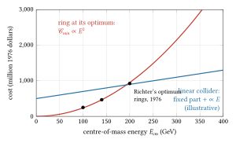
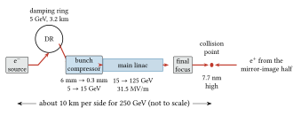
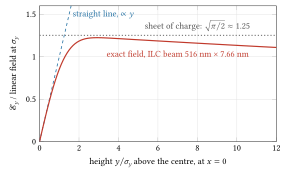
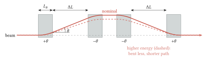
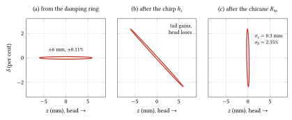
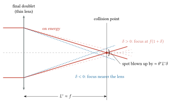
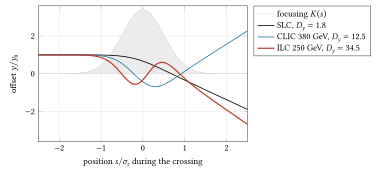
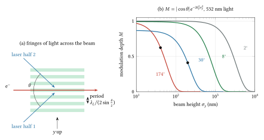

25 Linear colliders
1965 to today: Tigner’s clashing beams, Richter’s scaling laws, the SLC (1989 to 1998), the FFTB and ATF2, the ILC and CLIC designs, and the circular Higgs factories they compete with; past the wall of synchrotron radiation, which makes an electron ring’s loss per turn grow as \(E^4/\rho\).
Pre-requisites for this chapter.
From Part 0, Foundations:
- F1, Calculus: the exponential (section 4), for damping and the Gaussian; derivatives set to zero for a minimum, and small changes (section 5), for the cheapest ring (section 1) and the chromatic shift of a focus (section 6); integrals worked out, with substitution (section 7), for the field of a flat beam and the photons radiated (the pre-requisite before section 2 and section 8); Taylor series (section 8), for the linear field near the centre and the chirp of an RF section; partial derivatives (section 9), for \(\partial_y\) of a Gaussian; first differential equations (section 10), for the emittance relaxing in a damping ring (section 4); and numbers on a computer (section 11), for the integrals and the paths done numerically (sections 7 and 8).
- F2, Vectors: the dot product (section 2), for products of four-momenta in Compton scattering and the contrast of the Shintake fringes; integrals over areas (section 8), for adding the fields of a beam’s line charges; and divergence with Gauss’s theorem (section 10), for the check \(\nabla\cdot\boldsymbol{\mathcal{E}} = \rho/\varepsilon_0\) on the flat beam’s field.
- F3, Mechanics: momentum and impulse (section 3), for the kick a particle gets from the oncoming bunch; and simple harmonic motion (section 9), for the particles that oscillate inside it (section 7).
- F4, Electromagnetism: the electric field and superposition (section 3), Gauss’s law (section 4) and the magnetic force (section 10), for the beam’s fields and forces (sections 7 and 8); electromagnetic waves and the energy they carry (sections 17 and 18), for the intensity of a laser in Thomson scattering.
- F5, Waves: complex numbers (section 1), for the complex error function; the damped oscillator and its \(Q\) (section 4), for the cavities (section 9); interference (sections 10 and 15), for the fringes of the Shintake monitor; and the Doppler effect (section 14), for light meeting a fast electron.
- F6, Heat and probability: mean, variance and standard deviation (section 3), the Gaussian (section 5) and the central limit theorem (section 7), for rms sizes, averages over a bunch and random errors that add in quadrature (sections 2 to 8).
- F7, Atoms and quanta: the electron-volt (section 3), light as particles (section 4), antimatter and pairs (section 14) and the map of particles (section 15), for positrons, beamstrahlung photons and the muon of “Where it stops”.
From the chapters, and taught again in this one where marked “continued”:
- Larmor formula and relativistic radiated power, taught in chapter 1: the loss per turn \(U_0 = C_\gamma E^4/\rho\) and the radiated power \(\tfrac23r_em_ec^3\gamma^4/\rho^2\) (sections 1 and 8), and why a force along the motion radiates \(\gamma^2\) less than the same force across it (section 1; the general formula is in chapter 20).
- Special functions and integrals (continued): the overlap of Gaussian bunches and of offset Gaussians (sections 2 and 7), the field of a flat Gaussian beam and its linear part (sections 7 and 8), Gaussian averages and the integral of a Gaussian’s square root (sections 7 and 8).
- Phase space and Liouville’s theorem, taught in chapter 7: emittance as phase-space area and the normalised emittance kept through acceleration (section 3), and the area kept in the longitudinal plane, so that compressing a bunch raises its energy spread (section 4).
- Linear systems and transfer matrices (continued): the longitudinal map of a chirp and a chicane, \(R_{56}\) and the bunch compressor (section 4), and, from chapter 8’s thin lens and the matrices of chapter 16 and chapter 21, the kick of a displaced quadrupole and the \(-I\) between sextupoles a phase advance \(\pi\) apart (sections 5 and 6).
- Errors and their propagation, taught in chapter 1: variances of independent contributions adding, with their coefficients squared, for the compressed bunch length, the quadrupole offsets and the chromatic blow-up (sections 4, 5 and 6).
- Diffusion and Fokker-Planck, taught in chapter 3: the random walk whose mean square grows linearly in time, behind the ATL law of ground motion (section 5).
- Two-dimensional magnetic potentials and multipole expansion, taught in chapter 7: the sextupole kick \(k_2l\,xy\), its feed-down to a quadrupole of strength \(k_2lD_x\delta\) and the chromatic focal length \(f(1+\delta)\) (section 6); the kick is worked in chapter 18’s continuation, the feed-down in chapter 18, section 6 and the focal length in chapter 16, section 12.
- Lorentz transformations, time dilation, length contraction, taught in chapter 1: the field of a relativistic bunch flattened into a disc, with \(B = \mathcal{E}_\perp/c\), and the transformation of fields that makes the forces of an oncoming bunch add (sections 7 and 8; the field transformation is in chapter 8).
- Relativistic motion in electric and magnetic fields, taught in chapter 1: the kick \(\Delta p_y/p\) with \(p = \gamma m_ec\), the bending radius \(1/\rho = F/(\gamma m_ec^2)\), and the closing speed \(2c\) of chapter 23 (sections 7 and 8).
- Gauss’s law and potentials of simple shapes, taught in chapter 1: the field of a line charge, the round Gaussian beam of chapter 23, and the classical electron radius \(r_e\) (section 7).
- Ordinary differential equations, taught in chapter 2: oscillation in \(x'' + K(s)x = 0\) with a varying \(K\) (section 7). The phase advance \(\int\sqrt K\,ds\) when \(K\) changes slowly is the slicing argument of the WKB approximation in chapter 1, applied in the special-functions continuation below.
- Photons and the photoelectric effect (continued): the fine-structure constant, \(\bar\lambda_c = r_e/\alpha\), the critical field, pair creation (section 8), and Compton scattering for the Shintake monitor (“At the bench”).
- Angular distribution and spectrum of radiation (continued): the beamstrahlung parameter \(\Upsilon\) and the quantum cut-off of the spectrum (section 8); the critical energy, the photon rate and the mean photon energy are in chapter 20.
- Driven oscillator, resonance and quality factor, taught in chapter 7: \(Q_0\), the loaded \(Q_L\) and the time constant \(2Q_L/\omega\); filling a cavity towards twice its working voltage, reached after \(\tau\ln2\), is worked in chapter 13, section 7 (section 9).
- Superconductivity basics, taught in chapter 12: niobium at 2 K with \(Q_0\) near \(10^{10}\), and a gradient limited by the critical magnetic field rather than by breakdown as in copper (section 9; the RF side is in chapter 13).
In one page
The wall. An electron on a circle of radius \(\rho\) loses \(U_0 = C_\gamma E^4/\rho\) per turn, with \(C_\gamma = 8.846\times10^{-5}\) m GeV\(^{-3}\). LEP at 104 GeV on \(\rho = 3026\) m lost 3.42 GeV a turn. In the same tunnel a 250 GeV beam would lose 114 GeV a turn, almost half its energy. Richter showed in 1976 that the cheapest ring has a radius proportional to \(E^2\), and so a cost that also grows as \(E^2\).
The idea. Accelerate in a straight line, where almost nothing is radiated, and collide each bunch once. A linac’s length and cost grow only as \(E/G\), with \(G\) the accelerating gradient. The price is that each bunch is used once. A ring makes its bunches cross tens of millions of times a second; a linear collider makes a few thousand crossings a second, and must make up the difference with spots a few nanometres high.
The equations to remember.
\[ \mathcal{L} = \frac{f_{rep}\,n_b N^2}{4\pi\sigma_x\sigma_y}\,H_D , \qquad \sigma_y = \sqrt{\beta_y^*\,\varepsilon_{n,y}/\gamma} \]
\[ D_y = \frac{2Nr_e\sigma_z}{\gamma\sigma_y(\sigma_x+\sigma_y)}, \qquad n_\gamma \approx 2.1\,\frac{\alpha r_e N}{\sigma_x+\sigma_y}, \qquad \Upsilon \approx \frac{5}{6}\,\frac{N r_e^2\gamma}{\alpha\sigma_z(\sigma_x+\sigma_y)} \]
\[ \mathcal{L} \approx \frac{H_D}{8\pi\alpha r_e}\,\frac{P_b}{eE_{cm}}\,\frac{n_\gamma}{\sigma_y} \]
Here \(f_{rep}\) is the pulse rate (Hz), \(n_b\) the bunches per pulse, \(N\) the particles per bunch, \(\sigma_{x,y,z}\) the rms bunch sizes at the collision point (m), \(H_D\) the pinch enhancement, \(D_y\) the disruption parameter (the field’s symbol; not the dispersion \(D_x(s)\), which appears in this chapter only with the sextupoles of section 6), \(n_\gamma\) the number of beamstrahlung photons per particle, \(\Upsilon\) the beamstrahlung parameter, \(P_b\) the beam power of both beams (W), \(E_{cm}\) the centre-of-mass energy in volts, \(r_e\) the classical electron radius, \(\alpha\) the fine-structure constant. The last line says it all: luminosity costs beam power, the photons radiated in the collision must be held to about one or two per particle, so the beam must be flat (\(\sigma_x \gg \sigma_y\)) and as low as possible.
Numbers worth knowing. The SLC (1989 to 1998) collided 45.6 GeV beams of \(4\times10^{10}\) particles at 120 Hz in spots of 1.5 µm by 0.65 µm and reached \(3\times10^{30}\) cm\(^{-2}\) s\(^{-1}\), half its design. The ILC at 250 GeV: 1312 bunches of \(2\times10^{10}\) at 5 Hz, 31.5 MV/m at 1.3 GHz, spots of 516 nm by 7.7 nm, \(1.35\times10^{34}\) cm\(^{-2}\) s\(^{-1}\), 5.26 MW of beam power. CLIC at 380 GeV: 12 GHz, 72 MV/m, spots of 149 nm by 2.9 nm, \(1.5\times10^{34}\) cm\(^{-2}\) s\(^{-1}\). The FFTB focused a 46.6 GeV beam to 70 nm high in 1994; ATF2 reached 41 nm in 2016 against a design of 37 nm. Pre-alignment of about 10 µm, quadrupole vibration of about 1 nm above 1 Hz.
The wall
Chapter 20 followed LEP to its end. In 2000 it ran 104 GeV beams on an effective bending radius of 3026 m, lost 3.42 GeV per electron per turn, and needed about 3.7 GV of superconducting RF to hold beams of a few milliamperes. A 10 per cent step in energy cost 46 per cent more loss (\(1.1^4 = 1.46\)). That was the fourth power at work, and every electron physicist could see it coming long before LEP was built.
The analysis that made the wall quantitative was Burton Richter’s. In 1976 he published, from SLAC, a design study of very high energy electron-positron storage rings for the study of the weak interactions (Nuclear Instruments and Methods 136, 47). He minimised the cost of a ring of given energy and luminosity. The magnets, vacuum and tunnel cost roughly in proportion to the radius; the RF system and ten years of electricity cost in proportion to the power lost, which goes as \(E^4/R\). A big ring is expensive to build, a small one expensive to feed. In a lecture given in 1978 and printed as SLAC-PUB-2274, he summarised the result: where the \(E^4\) term dominates, the optimum radius and the cost are both proportional to the square of the energy. With unit costs from SLAC’s PEP ring, his optimum for a 70 GeV per beam machine had a bending radius of about 2.7 km, and he judged a ring for 200 GeV in the centre of mass too costly for any one region of the world with conventional RF. Phinney’s history of the SLC says that Richter, on a sabbatical at CERN, had helped convince CERN to build LEP. The same reasoning led to the realisation that a ring is the wrong shape for much higher energies: a cost growing as \(E^2\) is eventually overtaken by anything growing as \(E\).
The straight alternative had been proposed eleven years earlier. In 1965 Maury Tigner published “A possible apparatus for electron clashing-beam experiments” (Il Nuovo Cimento 37, 1228). Storage rings were then new and limited in energy; Tigner proposed bringing beams from linear accelerators into collision, and recovering the energy of the spent beams in the accelerating structure. Shiltsev and Zimmermann’s review credits this paper both as the first proposal of a linear collider and as the origin of the superconducting energy-recovery linac (chapter 26). The review names two papers that developed the idea for higher energy: Ugo Amaldi’s of 1976 (Physics Letters 61B, 313) and the VLEPP project presented by Vladimir Balakin and Alexander Skrinsky of Novosibirsk in 1979.
What did not scale was the obvious: a larger ring, or superconducting cavities in it. Superconducting RF cuts the power wasted in the cavity walls, and Richter in 1978 expected it to raise a given ring’s energy; LEP’s second phase used it to go from 45.6 to 104.5 GeV. But it does nothing about the power radiated by the beam, which is the \(E^4/\rho\) itself. At 250 GeV per beam, holding the loss to LEP’s 3.4 GeV per turn needs a bending radius of 101 km; even the cost-optimised \(E^2\) scaling needs 17.5 km of bending radius. The next step in electron energy, it was clear by the late 1970s, would be linear.
The linear collider has its own wall, and it is the subject of this chapter. A ring at LHC-like parameters makes about \(3\times10^7\) bunch crossings a second; the ILC design makes 6560. Each crossing must therefore be about 5000 times more productive, which with comparable bunch charges means beams about 5000 times smaller in cross-section. Richter started the SLAC Linear Collider (SLC), first proposed in 1979, to find out whether that could be done; he became SLAC’s director in 1984.
The physics
1. The cost of a ring and the cost of a line
Ring. The energy radiated per turn by an electron of energy \(E\) on bending radius \(\rho\) is (chapter 20)
\[ U_0 = C_\gamma\frac{E^4}{\rho}, \qquad C_\gamma = \frac{4\pi}{3}\frac{r_e}{(m_ec^2)^3} = 8.846\times10^{-5}\ \mathrm{m\,GeV^{-3}} . \]
To store a current \(I\) (A) the RF must supply a power \(P_{RF} = I\,U_0/e\), with \(U_0/e\) in volts. Take the cost of the ring as a part proportional to its size and a part proportional to the RF power, and let the bending radius be a fixed fraction of the average radius \(R\):
\[ \mathcal{C}(R) = aR + b\,\frac{E^4}{R} , \]
with \(a\) the cost per metre of ring (magnets, vacuum, tunnel) and \(b\) collecting the current required for the luminosity, \(C_\gamma\), the cost per watt of RF and of ten years of electricity. The first term grows with \(R\), the second falls, so the total has a lowest point between, where its slope is zero (F1, section 5). The derivative of \(aR\) is \(a\), and of \(bE^4R^{-1}\) is \(-bE^4R^{-2}\), so setting \(d\mathcal{C}/dR = a - bE^4/R^2 = 0\) and solving for \(R\),
\[ R_{opt} = \sqrt{\frac{b}{a}}\,E^2, \qquad \mathcal{C}_{min} = 2\sqrt{ab}\,E^2 . \]
At the optimum, half the money goes on the ring and half on the RF and its power. The assumptions are that \(a\) and \(b\) do not depend on \(E\) or \(R\), and that the luminosity requirement fixes the current. Richter’s fuller model (luminosity at the beam-beam limit, the most charge the beams can carry before each crossing’s focusing upsets the other beam’s oscillations, chapter 23, section 7; cavity length, cost of power conversion) gives the same conclusion where the \(E^4\) term dominates.
Check against Richter’s table (SLAC-PUB-2274, Table I, 1976 dollars, PEP unit costs). His optimum machines had bending radii of 1.4, 2.7 and 5.4 km for 100, 140 and 200 GeV in the centre of mass. The ratio 5.4/2.7 = 2.0 against \((200/140)^2 = 2.04\). Capital plus ten years of RF power came to 250, 467 and 925 million dollars; the ratio 925/467 = 1.98 against 2.04. The \(E^2\) law holds within a few per cent.

Figure 25.1. Why a ring is the wrong shape at high energy. Dots: the total cost (capital plus ten years of RF power) of Richter’s three optimum rings of 1976. Red: the law \(\mathcal{C}_{min}\propto E^2\), drawn through his 140 GeV machine. Blue: the shape of a linear collider’s cost, a fixed part plus a part in proportion to \(E\); its numbers are illustrative, not a costing. Whatever the fixed part, a parabola eventually overtakes a straight line.
A worked number. In LEP’s tunnel (\(\rho = 3026\) m), \(U_0\) is 3.42 GeV at 104 GeV, 7.14 GeV at 125 GeV and 114 GeV at 250 GeV.
Line. A linac of gradient \(G\) (V/m) and fill factor \(F\) (the fraction of its length that accelerates) reaches energy \(E\) in length \(\ell = E/(eGF)\). Its cost is a fixed part (sources, damping rings, final focus) plus a part proportional to \(\ell\), and its wall-plug power (the electrical power drawn from the grid to run the whole machine) at fixed luminosity also grows in proportion to \(E\) (section 2). So the cost grows as \(E\), not \(E^2\). With a large fixed part the linear collider is more expensive at low energy; somewhere the curves cross. For the ILC, accelerating from 15 GeV to 125 GeV at 31.5 MV/m takes 3.49 km of active length per side (\(110\times10^9\) V divided by \(31.5\times10^6\) V/m); to 250 GeV it takes 7.46 km. For CLIC at 72 MV/m, 9 to 190 GeV takes 2.51 km; at 100 MV/m, 9 to 1500 GeV takes 14.9 km.

Figure 25.2. The parts of a linear collider in the order a bunch meets them, with the ILC’s numbers at 250 GeV (not to scale). Only the electron half is drawn; the positron half, on the right, is its mirror image. Each beam is made at a source, shrunk in a damping ring (section 4), shortened in a bunch compressor (section 4), accelerated once in a main linac (section 5) and squeezed to nanometres by the final focus (section 6). The two beams meet once (sections 7 and 8) and go to dumps.
Why the line does not radiate. The radiated power for a force parallel to the motion is smaller by \(\gamma^2\) than for the same force across it (chapter 20, section 2). For a force \(F\) along the motion the power is \(P = \tfrac23\,r_eF^2/(m_ec)\), with no \(\gamma\) at all (chapter 1’s relativistic Larmor formula for a force along the motion, \(F = dp/dt\)). In the same time the force does work \(Fc\) per second on a particle moving at \(c\). The ratio of energy radiated to energy gained is therefore
\[ \frac{P}{Fc} = \frac{2}{3}\,\frac{r_eF}{m_ec^2} = \frac{2}{3}\,\frac{r_e\,eG}{m_ec^2} , \]
with \(F = eG\). At \(G = 30\) MV/m, \(eG/m_ec^2 = 3\times10^7/0.511\times10^6 = 58.7\) m\(^{-1}\), and the ratio is \(\tfrac23\times2.818\times10^{-15}\times58.7 = 1.1\times10^{-13}\). An electron radiates \(1.1\times10^{-13}\) of the energy it gains: nothing.
Pre-requisite (continued): Special functions and integrals (Bessel, Gaussian, error function)
Pre-requisite. This continues Special functions and integrals in chapter 2 and its continuation in chapter 23, which gave the overlap of two Gaussian bunches, \(N_1N_2/(4\pi\sigma_x\sigma_y)\), the integral of a Gaussian’s square, and the fall of the overlap as \(e^{-d^2/4\sigma^2}\) when equal beams are offset by \(d\). It adds the electric field of a bunch whose cross-section is a flat Gaussian (\(\sigma_x \ne \sigma_y\)), which Gauss’s law alone cannot give: an integral formula built only from Gaussians, its straight-line part near the centre, its closed form with the complex error function (the Bassetti-Erskine formula), how far the straight line can be trusted, and the averages of the field over the bunch. It ends with the integral of the square root of a Gaussian. Section 2 uses the overlap from chapter 23; sections 7 and 8 use everything else. Taught from Lee, Accelerator Physics, chapter 5, §II.1 and exercise 5.2, problem 1 (the potential and kick of a Gaussian beam, after Bassetti and Erskine), and Chao and others, Handbook, §2.5.1 (the integral form of the potential and the Bassetti-Erskine formula).
Reminder: chapter 23 found the field of a round Gaussian beam of line density \(\lambda\) (C/m) and rms radius \(\sigma\) in one line of Gauss’s law, \(\mathcal{E}_r = (\lambda/2\pi\varepsilon_0)(1 - e^{-r^2/2\sigma^2})/r\). That worked because a round beam is symmetric: the field points outwards and depends only on \(r\). A flat beam has no such symmetry, so the field is not fixed by the charge inside a circle, and another route is needed.
The idea. Build the flat beam out of line charges and add up their fields. The sum contains the awkward factor \(1/d^2\), with \(d\) the distance from each line charge. Replace that factor by an integral of Gaussians. Then every integral over the beam is a convolution of Gaussians, and chapter 23’s rule (convolving Gaussians adds their variances) does them all.
Set-up. Take a slice of the bunch, long compared with its width, so that it can be treated as a piece of an infinite line (chapter 23 explained why this holds for a relativistic bunch). It carries charge \(\lambda\) per metre, spread across the beam as
\[ \rho(x,y) = \lambda\,G(x;\sigma_x^2)\,G(y;\sigma_y^2), \qquad G(u;S) = \frac{e^{-u^2/2S}}{\sqrt{2\pi S}} , \]
in C/m³. Here \(G(u;S)\) is the normalised Gaussian with variance \(S\) (m²). Each element \(\rho\,dx'dy'\) is a line charge, whose field (chapter 1) has magnitude \(\rho\,dx'dy'/(2\pi\varepsilon_0d)\) and points away from it along \(\mathbf{d} = (x - x', y - y')\). The vertical component of the total is
\[ \mathcal{E}_y(x,y) = \frac{1}{2\pi\varepsilon_0}\int\!\!\int\rho(x',y')\,\frac{y - y'}{d^2}\,dx'\,dy', \qquad d^2 = (x-x')^2 + (y-y')^2 . \]
The trick. For any \(d^2 > 0\),
\[ \frac{1}{d^2} = \int_0^\infty e^{-td^2}\,dt , \]
because the integral is \([-e^{-td^2}/d^2]_0^\infty = 1/d^2\). Here \(t\) has units of m\(^{-2}\). Also \((y-y')\,e^{-t(y-y')^2} = -(1/2t)\,\partial_y e^{-t(y-y')^2}\). So
\[ \mathcal{E}_y = -\frac{1}{2\pi\varepsilon_0}\int_0^\infty\frac{1}{2t}\,\frac{\partial}{\partial y}\left[\int\!\!\int\rho(x',y')\,e^{-t(x-x')^2}e^{-t(y-y')^2}\,dx'\,dy'\right]dt . \]
The inner integral. The factor \(e^{-tu^2}\) is an unnormalised Gaussian of variance \(1/(2t)\): \(e^{-tu^2} = \sqrt{\pi/t}\;G(u;1/2t)\). The integral over \(x'\) is then a convolution of two normalised Gaussians, which is a Gaussian whose variance is the sum, and likewise for \(y'\):
\[ \int\!\!\int\rho\,e^{-t(x-x')^2}e^{-t(y-y')^2}\,dx'\,dy' = \lambda\,\frac{\pi}{t}\,G\!\left(x;\sigma_x^2 + \frac{1}{2t}\right)G\!\left(y;\sigma_y^2 + \frac{1}{2t}\right) . \]
Differentiating a Gaussian brings down \(-y/S\): \(\partial_yG(y;S) = -(y/S)\,G(y;S)\). Now change variable to \(q = 1/(2t)\), the variance the smoothing adds (m²); then \(dt = -dq/(2q^2)\) and \(1/t^2 = 4q^2\), so the factor \((\pi/2t^2)\,dt\) becomes \(\pi\,dq\) with the limits turned round. Writing out the two Gaussians:
\[ \mathcal{E}_y(x,y) = \frac{\lambda\,y}{4\pi\varepsilon_0}\int_0^\infty\frac{\exp\left[-\dfrac{x^2}{2(\sigma_x^2+q)} - \dfrac{y^2}{2(\sigma_y^2+q)}\right]}{(\sigma_y^2+q)^{3/2}\,(\sigma_x^2+q)^{1/2}}\,dq , \]
and \(\mathcal{E}_x\) is the same with \(x\) and \(y\) exchanged everywhere. This is the form the Handbook and Lee write, with their integration variable equal to \(2q\). It is exact for a Gaussian slice; the only assumption is that the slice is long compared with its width.
Check: the round beam. Put \(\sigma_x = \sigma_y = \sigma\) and \(r^2 = x^2 + y^2\). The integrand becomes \(e^{-r^2/2(\sigma^2+q)}/(\sigma^2+q)^2\). Substitute \(v = 1/(\sigma^2 + q)\), so \(dq = -dv/v^2\) and the integrand times \(dq\) is \(e^{-r^2v/2}\,dv\), from \(v = 0\) to \(1/\sigma^2\). That integral is \((2/r^2)(1 - e^{-r^2/2\sigma^2})\), so \(\mathcal{E}_y = (\lambda/2\pi\varepsilon_0)(y/r^2)(1 - e^{-r^2/2\sigma^2})\): Gauss’s law result, times \(y/r\) for the vertical component.
Near the centre. For \(|x| \ll \sigma_x\) and \(|y| \ll \sigma_y\) the exponential is close to 1 for every \(q\), since its exponents never exceed \(x^2/2\sigma_x^2\) and \(y^2/2\sigma_y^2\). Then \(\mathcal{E}_y \approx (\lambda y/4\pi\varepsilon_0)\,I\) with
\[ I = \int_0^\infty\frac{dq}{(a+q)^{3/2}(b+q)^{1/2}}, \qquad a = \sigma_y^2,\quad b = \sigma_x^2 . \]
The integrand is a derivative in disguise. Differentiating \((b+q)^{1/2}(a+q)^{-1/2}\) by the product rule gives \(\tfrac12(b+q)^{-1/2}(a+q)^{-3/2}[(a+q) - (b+q)]\), so
\[ \begin{aligned} \frac{d}{dq}\sqrt{\frac{b+q}{a+q}} &= \frac{a-b}{2\,(a+q)^{3/2}(b+q)^{1/2}}, \\ I = \frac{2}{a-b}\left[\sqrt{\frac{b+q}{a+q}}\right]_0^\infty &= \frac{2}{a-b}\left(1 - \sqrt{\frac{b}{a}}\right) = \frac{2}{\sqrt a\,(\sqrt a + \sqrt b)} , \end{aligned} \]
the last step using \(a - b = (\sqrt a - \sqrt b)(\sqrt a + \sqrt b)\). With \(\sqrt a = \sigma_y\) and \(\sqrt b = \sigma_x\):
\[ \mathcal{E}_y \approx \frac{\lambda}{2\pi\varepsilon_0}\,\frac{y}{\sigma_y(\sigma_x+\sigma_y)}, \qquad \mathcal{E}_x \approx \frac{\lambda}{2\pi\varepsilon_0}\,\frac{x}{\sigma_x(\sigma_x+\sigma_y)} . \]
This is the field section 7 starts from. A numerical integration of \(I\) for the ILC’s sizes agrees with the closed form.
Check: Gauss’s law in differential form. Gauss’s law for a small box says that the divergence of the field, \(\partial\mathcal{E}_x/\partial x + \partial\mathcal{E}_y/\partial y\) here (nothing changes along the slice), equals \(\rho/\varepsilon_0\) at every point (F2, section 10). The two gradients add to \((\lambda/2\pi\varepsilon_0)[1/(\sigma_x(\sigma_x+\sigma_y)) + 1/(\sigma_y(\sigma_x+\sigma_y))] = \lambda/(2\pi\varepsilon_0\sigma_x\sigma_y)\), which is \(\rho(0,0)/\varepsilon_0\), as \(\nabla\cdot\boldsymbol{\mathcal{E}} = \rho/\varepsilon_0\) requires. The total focusing at the centre is fixed by the charge density; flatness only shares it out. The vertical plane receives the fraction \(\sigma_x/(\sigma_x+\sigma_y)\): 98.5 per cent for the ILC’s 516 nm by 7.66 nm beam. That is why the vertical disruption of section 7 is so much larger than the horizontal.
At work: the ILC at 250 GeV. The centre slice of a bunch of \(N = 2\times10^{10}\) with \(\sigma_z = 0.3\) mm has \(\lambda = Ne/(\sqrt{2\pi}\,\sigma_z) = 4.26\times10^{-6}\) C/m. At \(y = \sigma_y\) the linear formula gives \(\mathcal{E}_y = 1.46\times10^{11}\) V/m, with a magnetic partner \(\mathcal{E}_y/c = 488\) T. No magnet comes near it, but it acts for only about a picosecond.
How far the straight line holds. Along \(x = 0\) for the ILC’s shape, the exact field (the integral above, done numerically) is 0.959 of the linear one at \(y = 0.5\sigma_y\), 0.854 at \(\sigma_y\), 0.592 at \(2\sigma_y\) and 0.408 at \(3\sigma_y\). It peaks near \(y = 2.9\sigma_y\) at 1.22 times the linear value at \(\sigma_y\). The reason is the picture of a charged sheet. For \(\sigma_y \ll |y| \ll \sigma_x\) a flat beam looks like a sheet with surface charge \(\lambda G(x;\sigma_x^2)\), whose field is the surface charge over \(2\varepsilon_0\) (the pillbox of chapter 2), independent of \(y\). At \(x = 0\) that is \(\lambda/(2\varepsilon_0\sqrt{2\pi}\,\sigma_x)\), which is \(\pi(\sigma_x+\sigma_y)/(\sqrt{2\pi}\,\sigma_x) \approx \sqrt{\pi/2} = 1.25\) times the linear field at \(\sigma_y\). The field rises linearly through the core, saturates near the sheet value, and falls only when \(|y|\) approaches \(\sigma_x\). The beam-beam lens of section 7 is therefore linear only within about one \(\sigma_y\); particles further out feel a weaker, nearly constant force. That is one reason the disruption of real beams needs simulation.

Figure 25.3. The vertical field of the ILC’s flat beam (516 nm by 7.66 nm) along its vertical centre line, in units of the linear field at \(y = \sigma_y\), computed from the Bassetti-Erskine formula below. Near the centre it follows the straight line (blue), which is the thin lens of section 7; by \(2\sigma_y\) it has bent over, peaks at 1.22 near \(2.9\sigma_y\), and then stays close to the field of a flat sheet of charge, \(\sqrt{\pi/2}\) (grey), falling only slowly until \(y\) approaches \(\sigma_x = 67\sigma_y\).
The closed form. Bassetti and Erskine (1980) did the \(q\) integral in terms of the complex error function \(w(z) = e^{-z^2}\operatorname{erfc}(-iz)\), defined for complex \(z\) (F5, section 1). Here \(\operatorname{erfc}(u) = 1 - \operatorname{erf}(u)\) is the complementary error function, the area under a Gaussian’s tail beyond \(u\) (in chapter 2’s normalisation), and \(w\) extends it from real to complex arguments; nothing below needs more of it than its name and a computer that can evaluate it. For \(\sigma_x > \sigma_y\) and \(x, y \ge 0\),
\[ \begin{aligned} \mathcal{E}_y + i\mathcal{E}_x = \frac{\lambda}{2\varepsilon_0\sqrt{2\pi(\sigma_x^2 - \sigma_y^2)}}\Bigg[ & w\!\left(\frac{x + iy}{\sqrt{2(\sigma_x^2-\sigma_y^2)}}\right) \\ & - e^{-x^2/2\sigma_x^2 - y^2/2\sigma_y^2}\,w\!\left(\frac{x\sigma_y/\sigma_x + iy\sigma_x/\sigma_y}{\sqrt{2(\sigma_x^2-\sigma_y^2)}}\right)\Bigg] . \end{aligned} \]
Other quadrants follow from symmetry: \(\mathcal{E}_x\) is odd in \(x\) and \(\mathcal{E}_y\) odd in \(y\). Lee’s exercise 5.2 (problem 1, parts e
to g) derives it by a change of variable that turns the \(q\) integral into an integral of \(e^{\zeta^2}\) along a path in the complex
plane. Use it as a tool: in Python, \(w\) is scipy.special.wofz.
Checked against the integral form at four points across the ILC beam,
the two agree to at least twelve digits. Codes use the closed form
because it is much faster than integrating.
Averages over the bunch. Section 8 writes the field’s magnitude as \((\lambda/2\pi\varepsilon_0)\,g_\perp(x,y)\), with \(g_\perp\) (m\(^{-1}\)) a geometric factor, and needs its averages over the particles of the other beam, which share the same Gaussian distribution. For a round beam they can be done exactly (exercises G1 and G2): \(\langle g_\perp\rangle = 0.734/(\sigma_x+\sigma_y)\) and \(\langle g_\perp^2\rangle = 0.575/(\sigma_x+\sigma_y)^2\). For a flat beam, draw a million particle positions from the Gaussian, evaluate \(g_\perp\) with the closed form, and average: for the ILC’s 67:1 beam this gives 0.742 and 0.602 in the same units, and for CLIC’s 51:1 beam 0.742 and 0.602 again. These are the \(c_0\) and \(c_1\) of section 8.
The square root of a Gaussian. Section 7 needs \(\int\sqrt{K(s)}\,ds\) with \(K(s) = 2\rho_z(2s)/f_y\), where \(\rho_z(u) = G(u;\sigma_z^2)\). Why this integral: where \(K\) is constant, \(x'' + Kx = 0\) gives \(x \propto \cos(\sqrt K\,s)\), a phase that grows by \(\sqrt K\) radians per metre. Where \(K\) changes slowly, cut the path into short slices of nearly constant \(K\) and add their phases, as chapter 1 added the WKB exponents of thin slices of a barrier; the total is \(\int\sqrt K\,ds\). The square root of a Gaussian is a Gaussian of twice the variance: \(\sqrt{e^{-u^2/2\sigma^2}} = e^{-u^2/4\sigma^2}\). Here \(\rho_z(2s) = e^{-2s^2/\sigma_z^2}/(\sqrt{2\pi}\,\sigma_z)\), whose square root is \(e^{-s^2/\sigma_z^2}/((2\pi)^{1/4}\sigma_z^{1/2})\), and \(\int e^{-s^2/\sigma_z^2}ds = \sqrt\pi\,\sigma_z\) (chapter 23). So
\[ \int_{-\infty}^{\infty}\sqrt{K(s)}\,ds = \sqrt{\frac{2}{f_y}}\,\frac{\sqrt\pi\,\sigma_z}{(2\pi)^{1/4}\sigma_z^{1/2}} = (2\pi)^{1/4}\sqrt{\frac{\sigma_z}{f_y}} = 1.583\sqrt{D_y} . \]
For the ILC, \(D_y = 34.5\) gives 9.29 rad, as a direct numerical integral also gives. Here \(K\) is not really slow: at the centre one oscillation takes 0.36 mm, about the bunch length. Still, solving \(x'' + K(s)x = 0\) numerically for a particle that enters parallel to the axis gives a phase of 9.4 rad, so the estimate holds to about 1 per cent.
The square, again. Section 8 also uses \(\int\lambda^2\,du = N^2e^2\int\rho_z^2\,du = N^2e^2/(2\sqrt\pi\,\sigma_z)\), chapter 23’s integral of a Gaussian’s square. Divided by \(\int\lambda\,du = Ne\), it gives the line density averaged with weight \(\lambda\) itself, \(Ne/(2\sqrt\pi\,\sigma_z)\): \(3.01\times10^{-6}\) C/m for the ILC, \(1/\sqrt2\) of the peak.
Exercise G1. For a round Gaussian beam, \(g_\perp = (1 - e^{-r^2/2\sigma^2})/r\). Average it over particles distributed as \((r/\sigma^2)e^{-r^2/2\sigma^2}dr\) and show that \(\langle g_\perp\rangle = c_0/(\sigma_x+\sigma_y)\) with \(c_0 = 0.734\).
Answer
\(\langle g_\perp\rangle = \int_0^\infty\frac{1 - e^{-r^2/2\sigma^2}}{r}\,\frac{r}{\sigma^2}\,e^{-r^2/2\sigma^2}\,dr = \frac{1}{\sigma^2}\int_0^\infty\left(e^{-r^2/2\sigma^2} - e^{-r^2/\sigma^2}\right)dr\). Each term is half a Gaussian integral: \(\int_0^\infty e^{-r^2/2\sigma^2}dr = \sigma\sqrt{\pi/2}\) and \(\int_0^\infty e^{-r^2/\sigma^2}dr = \sigma\sqrt\pi/2\). So \(\langle g_\perp\rangle = (\sqrt{\pi/2} - \sqrt\pi/2)/\sigma = 0.3671/\sigma\). With \(\sigma_x + \sigma_y = 2\sigma\), \(c_0 = 2\times0.3671 = 0.734\).
Exercise G2. For the same beam, show that \(\langle g_\perp^2\rangle = 2\ln(4/3)/(\sigma_x+\sigma_y)^2\). You will need \(\int_0^\infty(e^{-pa} - e^{-qa})\,da/a = \ln(q/p)\) for \(p, q > 0\); prove it by writing the integrand as \(\int_p^q e^{-ta}\,dt\) and doing the \(a\) integral first.
Answer
The lemma: \(\int_0^\infty\int_p^qe^{-ta}\,dt\,da = \int_p^q\frac{dt}{t} = \ln(q/p)\). Now \(\langle g_\perp^2\rangle = \int_0^\infty\frac{(1 - e^{-r^2/2\sigma^2})^2}{r^2}\,\frac{r}{\sigma^2}\,e^{-r^2/2\sigma^2}\,dr\). Put \(a = r^2/2\sigma^2\), so \(dr/r = da/(2a)\): \(\langle g_\perp^2\rangle = \frac{1}{2\sigma^2}\int_0^\infty\frac{e^{-a} - 2e^{-2a} + e^{-3a}}{a}\,da\). Split the numerator as \((e^{-a} - e^{-2a}) - (e^{-2a} - e^{-3a})\) and use the lemma twice: \(\ln2 - \ln(3/2) = \ln(4/3)\). So \(\langle g_\perp^2\rangle = \ln(4/3)/(2\sigma^2) = 2\ln(4/3)/(2\sigma)^2\), and \(c_1 = 2\ln(4/3) = 0.575\).
Exercise G3. For CLIC at 380 GeV (\(N = 5.2\times10^9\), \(\sigma_x = 149\) nm, \(\sigma_y = 2.9\) nm, \(\sigma_z = 70\) µm, \(\gamma = 3.718\times10^5\)), find the line density of the centre slice, the linear field at \(y = \sigma_y\), the fraction of the total focusing that acts vertically, and the vertical focal length \(f_y = \gamma\sigma_y(\sigma_x+\sigma_y)/(2Nr_e)\) of section 7.
Answer
\(\lambda = 5.2\times10^9\times1.602\times10^{-19}/(2.507\times70\times10^{-6}) = 4.75\times10^{-6}\) C/m. \(\mathcal{E}_y(\sigma_y) = \lambda/(2\pi\varepsilon_0(\sigma_x+\sigma_y)) = 4.75\times10^{-6}\times1.798\times10^{10}/1.519\times10^{-7} = 5.62\times10^{11}\) V/m, nearly four times the ILC’s, because the beam is narrower. Vertical fraction \(149/151.9 = 0.981\). \(f_y = 3.718\times10^5\times2.9\times10^{-9}\times1.519\times10^{-7}/(2\times5.2\times10^9\times2.818\times10^{-15}) = 5.6\) µm, as section 7 finds.
2. Luminosity in a single pass
Chapter 23 derived the luminosity of two Gaussian bunches meeting head on: \(N_1N_2/(4\pi\sigma_x\sigma_y)\) per crossing. In a linear collider, bunches come in trains of \(n_b\) bunches at a pulse rate \(f_{rep}\), so
\[ \mathcal{L} = \frac{f_{rep}\,n_b N^2}{4\pi\sigma_x\sigma_y}\,H_D . \]
\(\mathcal{L}\) is in m\(^{-2}\) s\(^{-1}\) with \(\sigma\) in metres; the field quotes cm\(^{-2}\) s\(^{-1}\) (1 cm\(^{-2}\) s\(^{-1}\) = \(10^4\) m\(^{-2}\) s\(^{-1}\)). \(H_D\) is the enhancement from the beams focusing each other during the crossing (section 7), typically 1.5 to 2.5. Without it the formula gives the geometric luminosity.
The beam power of both beams is \(P_b = 2Nn_bf_{rep}E_b = Nn_bf_{rep}\,eE_{cm}\), with \(E_b\) the beam energy and \(E_{cm}\) the centre-of-mass energy in volts. Divide:
\[ \mathcal{L} = H_D\,\frac{P_b}{eE_{cm}}\,\frac{N}{4\pi\sigma_x\sigma_y} . \]
This is the design equation. The first factor is set by the wall-plug power and the efficiency with which it reaches the beam. The second, luminosity per unit current, must be made large by squeezing.
SLC, 1998 (Phinney 2001). \(N = 4.0\times10^{10}\), \(f_{rep} = 120\) Hz, \(n_b = 1\), \(\sigma_x = 1.5\) µm, \(\sigma_y = 0.65\) µm. The geometric luminosity is \(1.57\times10^{30}\) cm\(^{-2}\) s\(^{-1}\); with the measured \(H_D \approx 2\) it is \(3.1\times10^{30}\), matching the achieved \(3\times10^{30}\).
ILC at 250 GeV (Machine Staging Report 2017). \(N = 2\times10^{10}\), \(n_b = 1312\), \(f_{rep} = 5\) Hz, \(\sigma_x = 516\) nm, \(\sigma_y = 7.66\) nm. Geometric: \(5.28\times10^{33}\); the design value \(1.35\times10^{34}\) implies \(H_D = 2.56\). The beam power is 5.26 MW. Against an estimated AC power of 129 MW for the first 250 GeV phase (TDR), about 4 per cent of the wall-plug power reaches the beams.
CLIC at 380 GeV (Schulte 2017). \(N = 5.2\times10^9\), \(n_b = 352\), \(f_{rep} = 50\) Hz, \(\sigma_x = 149\) nm, \(\sigma_y = 2.9\) nm: geometric \(8.76\times10^{33}\), design \(1.5\times10^{34}\), \(H_D = 1.71\). Beam power 5.57 MW from about 170 MW at the wall: 3.3 per cent.
3. Nanometre spots and flat beams
The beta function \(\beta_y(s)\) (m) of chapter 16, section 7 sets how large the beam is at each point of the line for a given emittance: small where the optics squeeze the beam, large where they let it spread. At a focus (a waist, the narrowest point, marked by a star) with vertical beta function \(\beta_y^*\) the rms vertical size is \(\sigma_y = \sqrt{\beta_y^*\varepsilon_y}\) (and likewise horizontally), with \(\varepsilon_y = \varepsilon_{n,y}/(\beta\gamma)\) the geometric emittance (chapter 16). For electrons \(\beta \approx 1\):
\[ \sigma_y = \sqrt{\frac{\beta_y^*\,\varepsilon_{n,y}}{\gamma}} . \]
The normalised emittance is what the source and the damping ring make and what the linac must preserve; acceleration shrinks the geometric emittance as \(1/\gamma\) (adiabatic damping).
ILC 250 GeV. \(\gamma = 2.446\times10^5\), \(\varepsilon_{n,y} = 35\) nm, \(\beta_y^* = 0.41\) mm: \(\sigma_y = 7.66\) nm. Horizontally \(\varepsilon_{n,x} = 5\) µm, \(\beta_x^* = 13\) mm: \(\sigma_x = 515\) nm. The beam at the collision point is a ribbon 67 times wider than it is high, and only \(\sqrt{\varepsilon_y/\beta_y^*} = 18.7\) µrad in vertical divergence.
Why not a smaller \(\beta_y^*\). Near a waist \(\beta_y(s) = \beta_y^* + s^2/\beta_y^*\) (chapter 23, section 6). A bunch of length \(\sigma_z\) collides over a length of order \(\sigma_z\); if \(\beta_y^* \ll \sigma_z\) most of the collision happens where the beam is fat (the hourglass effect). Without beam-beam forces the optimum is near \(\beta_y^* \approx \sigma_z/4\), but the pinch (section 7) moves it to about \(\sigma_z\) (Schulte 2017). The ILC chose \(\beta_y^* = 1.37\sigma_z\) at 250 GeV and \(1.6\sigma_z\) at 500 GeV; CLIC \(1.4\sigma_z\). So the bunch length sets the floor on \(\beta_y^*\), and \(\sigma_z\) must be short: 300 µm at the ILC, 70 µm at CLIC 380 GeV.
Why flat. Luminosity needs a small product \(\sigma_x\sigma_y\). Beamstrahlung (section 8) grows as \(1/(\sigma_x+\sigma_y)\). For a fixed product, the sum is smallest for a round beam and grows without limit as the beam is flattened. A flat beam has both a small product and a large sum. And it comes naturally: a damping ring’s horizontal emittance is set by quantum excitation in the bends (the random recoil of the particle each time it emits a single photon while being bent sideways, chapter 20, section 9), while its vertical emittance is set only by coupling (a slightly tilted or offset magnet passing some of the horizontal motion into the vertical) and by alignment errors, and can be made hundreds of times smaller.
Pre-requisite (continued): Linear systems and transfer matrices
Pre-requisite. This continues Linear systems and transfer matrices in chapter 8, which gave the matrices of a drift and a thin lens acting on \((x, x')\) and the beam matrix carried as \(\Sigma_1 = M\Sigma_0M^T\). Chapter 16 wrote the matrix over a phase advance \(\mu\) as \(I\cos\mu + J\sin\mu\), which becomes \(-I\) at \(\mu = \pi\), and chapter 21’s continuation gave the matrix between any two points from their Twiss functions. All of that acts across the beam. This section writes the same kind of map along the beam, for the pair \((z, \delta)\): position in the bunch and relative energy deviation. It shows that an RF section away from the crest acts on \((z, \delta)\) like a thin lens and a chicane like a drift, derives the chicane’s \(R_{56}\) from its geometry, multiplies the two into a bunch compressor, and reads off from the determinant why compression costs energy spread and why accelerating between stages helps. Section 4 uses all of it; sections 5 and 6 use the transverse thin lens of chapter 8 and the \(-I\) of chapters 16 and 21. Taught from Chao and others, Handbook, §4.4.1 (P. Emma, bunch compression), Lee, Accelerator Physics, chapter 2, exercise 2.4, problem 15 (\(R_{56}\) of a four-magnet chicane), and Lee, chapter 3, §V.3 (bunch compression and rotation).
Reminder: a thin lens of focal length \(f\) maps \((x, x')\) by \(\begin{pmatrix}1 & 0\\ -1/f & 1\end{pmatrix}\), a kick proportional to the offset; a drift of length \(L\) by \(\begin{pmatrix}1 & L\\ 0 & 1\end{pmatrix}\), an offset growing in proportion to the angle. Both have determinant 1, which is Liouville’s theorem for linear maps (chapter 8).
Coordinates. Let \(z\) (m) be a particle’s distance ahead of the bunch centre, head positive, and \(\delta = \Delta E/E\) its relative energy deviation (at \(\beta \approx 1\) the same as \(\Delta p/p\)). A linear map takes \((z_i, \delta_i)\) to \((z_f, \delta_f)\) through a \(2\times2\) matrix. Its elements are named \(R_{55}\), \(R_{56}\), \(R_{65}\), \(R_{66}\) because \(z\) and \(\delta\) are the fifth and sixth coordinates of the full set \((x, x', y, y', z, \delta)\). So \(R_{56} = \partial z_f/\partial\delta_i\): how far a particle moves along the bunch per unit relative energy error.
A straight line does nothing to \(z\). At \(\beta \approx 1\) every particle moves at nearly \(c\), whatever its energy. The small difference in speed gives \(R_{56} = L/\gamma^2\) over a drift of length \(L\) (Handbook, §4.4.1): 1.0 µm over 100 m at 5 GeV (\(\gamma = 9785\)). Negligible. To move particles along the bunch at high energy, they must take paths of different length.
A chicane is a drift in \((z, \delta)\). Four dipoles bend by \(+\theta\), \(-\theta\), \(-\theta\), \(+\theta\), each of length \(L_B\), with a distance \(\Delta L\) between the first and second and between the third and fourth. The beam steps sideways and back. Count the extra path with small angles. A path inclined at angle \(\varphi\) to the axis is longer than its projection by the factor \(1/\cos\varphi \approx 1 + \varphi^2/2\), so it gains \(\varphi^2/2\) per metre of axis.
- In the first magnet the angle grows linearly from 0 to \(\theta\) over \(L_B\): extra length \(\int_0^{L_B}\tfrac12(\theta s/L_B)^2\,ds = \theta^2L_B/6\).
- In the drift that follows, at angle \(\theta\): \(\theta^2\Delta L/2\).
- In the second magnet the angle falls back to zero: \(\theta^2L_B/6\). Between the second and third magnets the path is parallel to the axis and adds nothing.
- The third and fourth magnets and the drift between them repeat the first half.
The total is \(\Delta S = \theta^2(\Delta L + \tfrac23L_B)\). A dipole’s bend angle is inversely proportional to the momentum, \(\theta = \theta_0/(1+\delta)\), so \(d(\Delta S)/d\delta = -2\theta_0^2(\Delta L + \tfrac23L_B)\): a particle with more energy takes a shorter path and gains ground. With head positive,
\[ z_f = z_i + R_{56}\,\delta, \qquad R_{56} = 2\theta^2\left(\Delta L + \tfrac23L_B\right) > 0 , \]
and the magnets leave \(\delta\) unchanged, so the matrix is \(\begin{pmatrix}1 & R_{56}\\ 0 & 1\end{pmatrix}\): a shear of \(z\) in proportion to \(\delta\), exactly like a drift’s shear of \(x\) in proportion to \(x'\). At work: with \(\theta = 0.1\) rad, \(L_B = 2\) m and \(\Delta L = 10\) m (illustrative values), \(R_{56} = 0.227\) m; the Handbook’s exact formula, \(4L_B[\sin\theta/\theta - \cos\theta] + 2\Delta L\,\theta\sin\theta\), gives 0.226 m. The reference path is 11.3 cm longer than the straight line.

Figure 25.4. A four-dipole chicane seen from above (not to scale; the angles are drawn about four times too large). The bends are \(+\theta\), \(-\theta\), \(-\theta\), \(+\theta\), so the beam steps sideways and back and leaves on its original line. Inside each magnet the path’s angle changes steadily, so the path is a parabola there; between the outer pairs it is straight at angle \(\theta\). A particle of higher energy (dashed) is bent less, steps aside less and so travels a shorter path: it comes out ahead, which is what \(R_{56} > 0\) means.
An RF section off the crest is a thin lens. In the sine convention a cavity gives energy \(eV\sin\varphi\), with the crest at \(\varphi = 90°\). A particle at \(z\) arrives earlier by \(z/c\), so it sees the phase \(\varphi_0 - kz\), with \(k = 2\pi f_{RF}/c\) (m\(^{-1}\)) and \(\varphi_0\) the phase at the bunch centre. To first order in \(kz\),
\[ eV\sin(\varphi_0 - kz) \approx eV\sin\varphi_0 - eVk\cos\varphi_0\,z . \]
The first term accelerates the whole bunch; the second gives an energy change proportional to \(z\), a kick in \(\delta\) proportional to the position, as a quadrupole gives a kick in \(x'\) proportional to \(x\). At the zero crossing, \(\varphi_0 = 0\), the energy \(E\) is unchanged and \(\delta_f = \delta_i + h_zz\) with the chirp
\[ h_z = -\frac{eVk\cos\varphi_0}{E} \quad (\text{m}^{-1}), \qquad \begin{pmatrix}1 & 0\\ h_z & 1\end{pmatrix} . \]
With \(\varphi_0\) between \(-90°\) and \(90°\) (on the rising side of the wave), \(h_z < 0\): the head, which arrives earlier, gets less energy than the tail. If the section also accelerates from \(E_i\) to \(E_f\), \(\delta\) is now measured against the larger energy, so the incoming deviation shrinks: \(\delta_f = (E_i/E_f)\,\delta_i + h_zz\), with \(E_f\) in place of \(E\) in \(h_z\). The matrix becomes \(\begin{pmatrix}1 & 0\\ h_z & E_i/E_f\end{pmatrix}\), with determinant \(E_i/E_f\). That is the longitudinal form of adiabatic damping: the area in \((z, \delta)\) shrinks as \(1/E\), while the area in \((z, \Delta E)\) is kept, just as chapter 8’s normalised emittance is kept while the geometric one shrinks.
A bunch compressor: lens, then drift. Multiply, the chirp acting first:
\[ M = \begin{pmatrix}1 & R_{56}\\ 0 & 1\end{pmatrix}\begin{pmatrix}1 & 0\\ h_z & 1\end{pmatrix} = \begin{pmatrix}1 + h_zR_{56} & R_{56}\\ h_z & 1\end{pmatrix}, \qquad \det M = 1 . \]
The first row is section 4’s \(z_f = (1 + h_zR_{56})z_i + R_{56}\delta_0\). Carry the beam matrix of an uncorrelated bunch, \(\Sigma_0 = \mathrm{diag}(\sigma_{z,i}^2, \sigma_{\delta,0}^2)\), through \(\Sigma_f = M\Sigma_0M^T\):
\[ \sigma_{z,f}^2 = (1 + h_zR_{56})^2\sigma_{z,i}^2 + R_{56}^2\sigma_{\delta,0}^2, \qquad \sigma_{\delta,f}^2 = h_z^2\sigma_{z,i}^2 + \sigma_{\delta,0}^2 . \]
The first is section 4’s formula; the second says the chirp is now the energy spread. Because \(\det M = 1\), the longitudinal rms emittance \(\varepsilon_z = \sqrt{\det\Sigma}\) is unchanged, \(\sigma_{z,i}\sigma_{\delta,0}\). And since \(\sqrt{\det\Sigma} \le \sigma_z\sigma_\delta\) for any beam matrix (the off-diagonal term only lowers the determinant), the final bunch obeys \(\sigma_{z,f}\sigma_{\delta,f} \ge \sigma_{z,i}\sigma_{\delta,0}\). That is Liouville’s theorem in the \((z, \delta)\) plane: compress by a factor \(C_{bc}\), and the relative energy spread grows by at least \(C_{bc}\).
At work: one stage at 5 GeV. Take section 4’s numbers, \(\sigma_{z,i} = 6\) mm to \(\sigma_{z,f} = 0.3\) mm (\(C_{bc} = 20\)), and an uncorrelated spread from the damping ring of \(\sigma_{\delta,0} = 0.11\) per cent (an assumed value of the usual size). Then \(\varepsilon_z = 6.6\) µm and the final spread is at least 2.2 per cent. The second term of \(\sigma_{z,f}^2\) sets a floor, \(\sigma_{z,f} \ge R_{56}\sigma_{\delta,0}\), so \(R_{56}\) must be below 0.27 m. With \(R_{56} = 0.25\) m the floor is 0.275 mm; reaching 0.3 mm needs \(1 + h_zR_{56} = 0.020\), so \(h_z = -3.92\) m\(^{-1}\). At 1.3 GHz (\(k = 27.25\) m\(^{-1}\)) and the zero crossing, that takes \(eV = |h_z|E/k = 0.72\) GV, and the final spread is 2.35 per cent. With \(R_{56} = 0.1\) m the floor is lower, but \(h_z = -9.53\) m\(^{-1}\) needs 1.75 GV and leaves 5.7 per cent. Small \(R_{56}\) costs RF and spread; large \(R_{56}\) hits the floor.

Figure 25.5. One compressor stage at 5 GeV in the \((z, \delta)\) plane, computed with the numbers above (\(\sigma_{z,i} = 6\) mm, \(\sigma_{\delta,0} = 0.11\) per cent, \(h_z = -3.92\) m\(^{-1}\), \(R_{56} = 0.25\) m); each ellipse is the rms outline of the bunch. (a) From the damping ring: long and with little energy spread. (b) The RF section at its zero crossing is the thin lens: it adds \(h_zz\) to each \(\delta\), giving the head less energy and the tail more, and tilts the ellipse without moving anything along \(z\). (c) The chicane is the drift: it moves each particle forward by \(R_{56}\delta\), so the tail catches up with the head and the ellipse stands upright, 0.3 mm long with a spread of 2.35 per cent. The area is the same in all three panels: that is Liouville’s theorem.
Why accelerate between stages. Liouville fixes the area in \((z, \Delta E)\), not in \((z, \delta)\). The same final bunch carries an absolute spread of at least \(20\times0.11\% \times 5\) GeV \(= 110\) MeV: 2.2 per cent of 5 GeV but 0.73 per cent of 15 GeV. Downstream optics care about the relative spread, so the ILC compresses partly at 5 GeV and finishes after accelerating to 15 GeV, as section 4 describes.
The transverse pieces. Sections 5 and 6 use two results from the transverse matrices directly. A quadrupole displaced by \(\Delta\) acts on the beam centre like a thin lens seen from an offset \(-\Delta\), so it kicks by \(\theta = \Delta/f\); a drift of length \(L\) turns that kick into a displacement \(\theta L\). Two sextupoles separated by a betatron phase advance of \(\pi\) in both planes, with the same Twiss parameters at each, are joined by \(M = I\cos\pi + J\sin\pi = -I\): every particle arrives at the second with \((x, x') \to (-x, -x')\). A sextupole’s geometric kick goes as \(x^2\), which is even in \(x\). The first sextupole’s kick \(\Delta x'\) reaches the second as \(-\Delta x'\); the second, identical sextupole sees \(-x\) and gives the same \(+\Delta x'\) again, so the two cancel. Its chromatic kick, proportional to \(D_x\delta\,x\), is odd in \(x\), and the two add.
Exercise L1. Suppose a second compressor stage takes its chirp from a 5 to 15 GeV linac at 1.3 GHz run off the crest. What phase and total voltage give the full 10 GeV of acceleration and a chirp \(h_z = -2\) m\(^{-1}\) at 15 GeV?
Answer
Two conditions: \(eV\sin\varphi_0 = 10\) GeV and \(eVk\cos\varphi_0 = |h_z|E_f = 30\) GeV/m, so \(eV\cos\varphi_0 = 30/27.25 = 1.10\) GeV. Then \(\tan\varphi_0 = 10/1.10 = 9.08\), \(\varphi_0 = 83.7°\), which is 6.3° before the crest, and \(eV = \sqrt{10^2 + 1.10^2} = 10.06\) GeV. A chirp this strong costs only 0.6 per cent more voltage than running on the crest. (The chirp is illustrative, not the ILC’s design value.)
Exercise L2. Design a chicane at 5 GeV with \(R_{56} = 0.25\) m from four 2 m dipoles with 10 m between the outer pairs. Find the bend angle, the dipole field, and the sideways step of the beam between the second and third magnets.
Answer
\(\theta = \sqrt{R_{56}/(2(\Delta L + \tfrac23L_B))} = \sqrt{0.25/(2\times11.33)} = 0.105\) rad (6.0°). The rigidity is \(B\rho = p/e = 5\times10^9/c = 16.68\) T m, and \(\theta = BL_B/B\rho\) gives \(B = 0.105\times16.68/2 = 0.876\) T. The step is about \(\theta(L_B + \Delta L) = 0.105\times12 = 1.26\) m (half of \(L_B\theta\) in each of the two magnets plus \(\Delta L\,\theta\) in the drift). The exact formula gives \(R_{56} = 0.2496\) m at this angle.
Exercise L3. For the one-stage example above (\(R_{56} = 0.25\) m, \(h_z = -3.92\) m\(^{-1}\)), check that \(\det M = 1\), find the product \(\sigma_{z,f}\sigma_{\delta,f}\), and explain why it exceeds \(\varepsilon_z = 6.6\) µm.
Answer
\(\det M = (1 + h_zR_{56})\cdot1 - R_{56}h_z = 1\). \(\sigma_{z,f}\sigma_{\delta,f} = 0.3\ \text{mm}\times2.35\% = 7.06\) µm. The compressed bunch still has a correlation between \(z\) and \(\delta\) (the off-diagonal element \(\Sigma_{56} = (1 + h_zR_{56})h_z\sigma_{z,i}^2 + R_{56}\sigma_{\delta,0}^2 \ne 0\)), and \(\det\Sigma = \sigma_z^2\sigma_\delta^2 - \Sigma_{56}^2\) is smaller than \(\sigma_z^2\sigma_\delta^2\). The area is conserved; the rms box around a tilted ellipse is larger than the ellipse.
4. Making the emittance: damping rings and bunch compressors
Damping rings. Positrons from a target come out with a huge emittance; electrons from a gun are better but not good enough. Both are stored in a damping ring at a few GeV for a time long compared with the radiation damping time (chapter 20). The emittance relaxes to equilibrium as
\[ \varepsilon(t) = \varepsilon_{eq} + (\varepsilon_{inj} - \varepsilon_{eq})\,e^{-2t/\tau_y} , \]
with \(\varepsilon_{inj}\) the emittance at injection, \(\varepsilon_{eq}\) the equilibrium emittance, and \(\tau_y\) the amplitude damping time (the emittance, a square of amplitude, damps twice as fast). It is the solution of the first differential equation \(d\varepsilon/dt = -(2/\tau_y)(\varepsilon - \varepsilon_{eq})\) (F1, section 10): radiation damping pulls the emittance down at a rate proportional to its excess over \(\varepsilon_{eq}\), where quantum excitation holds it up. The ILC rings (TDR) are 3.2 km around at 5 GeV, with about 113 m of superferric wigglers at 2.16 T to speed the damping. A wiggler is a row of short dipoles of alternating polarity (chapter 20, section 11): the beam snakes through it with no net bend, but radiates as in any bend, so the ring loses, and the RF restores, more energy per turn and the damping time shortens in proportion. “Superferric” means superconducting coils on iron poles. They must deliver a normalised vertical emittance of 20 nm, five orders of magnitude below the injected positrons, within the 200 ms between pulses. At 5 GeV (\(\gamma = 9785\)) that is a geometric emittance of 2.04 pm. Reducing by \(10^5\) takes \(\ln(10^5) = 11.5\) emittance damping times, so \(\tau_y/2 \le 17.4\) ms and \(\tau_y \le 35\) ms, with margin needed on top. The ILC’s 727 µs bunch train is 218 km long in flight; on injection the bunches are packed about 70 times closer, from 554 ns to about 8 ns apart, to fit the 3.2 km ring, with kickers (fast pulsed magnets that deflect one bunch into or out of the ring and leave its neighbours alone, chapter 21, section 4) of about 3 ns rise time (TDR; the TDR’s “roughly a factor of 90” refers to a pulse of about 1 ms). The damping ring is also where flatness is made: its vertical emittance is limited by coupling and vertical dispersion from misalignment, so it is a ring of tight alignment tolerances. KEK’s Accelerator Test Facility (ATF) was built as its prototype.
Bunch compressors. A damping ring holds bunches millimetres long (ILC: 6 mm). The collision needs 0.3 mm. Compression is a two-step manipulation in longitudinal phase space. First an RF section run at the zero crossing gives the bunch an energy chirp: \(\delta = \delta_0 + h_zz\), with \(z\) the position in the bunch (head positive), \(\delta_0\) the uncorrelated part of the energy deviation (rms \(\sigma_{\delta,0}\)), and \(h_z\) the chirp (m\(^{-1}\); subscripted to keep it apart from the harmonic number \(h\)). Then a chicane of bends, in which higher-energy particles take a shorter path and so move forward, moves each particle by \(R_{56}\delta\) (so \(R_{56} > 0\) in this convention):
\[ z_f = z_i + R_{56}(\delta_0 + h_zz_i) = (1 + h_zR_{56})\,z_i + R_{56}\delta_0 . \]
Choosing \(h_zR_{56}\) near \(-1\) (the head given less energy than the tail, \(h_z < 0\)) maps the bunch onto a short one; with \(\delta_0\) uncorrelated with \(z_i\),
\[ \sigma_{z,f}^2 = (1 + h_zR_{56})^2\sigma_{z,i}^2 + R_{56}^2\sigma_{\delta,0}^2 . \]
Liouville’s theorem (chapter 16) forbids a free lunch: the longitudinal area is conserved, so compressing by a factor \(C_{bc}\) multiplies the relative energy spread by about \(C_{bc}\). For the ILC, \(C_{bc} = 20\). That is why the ILC compressor has two stages with acceleration from 5 to 15 GeV between and after them (TDR): the absolute spread is fixed by the chirp, and accelerating divides the relative spread by the energy. A large relative energy spread is the enemy of everything downstream, through dispersion and chromaticity.
5. Keeping the emittance: the main linac
Between the damping ring and the collision point the vertical emittance may grow by only a small fraction. Three things grow it.
Dispersion. A quadrupole displaced by \(\Delta\) kicks the beam by \(\theta = \Delta/f\), with \(f\) its focal length. The orbit can be steered back, but the kick depends on energy: a particle with relative momentum deviation \(\delta\) receives \(\theta(1-\delta)\). The kick that cannot be undone is the spread, \(\theta\sigma_\delta\). After the slices of different energy have dephased (filamented: particles of different energy are focused slightly differently, so they oscillate at slightly different rates and their phases spread evenly round the ellipse), a kick spread of \(\theta\sigma_\delta\) adds to the emittance
\[ \Delta\varepsilon \approx \tfrac{1}{2}\,\beta_y\,\theta^2\sigma_\delta^2 , \]
with \(\beta_y\) the beta function at the quadrupole (for a vertical offset). (A coherent kick \(\theta\) on a beam that then fully filaments adds \(\frac{1}{2}\beta_y\theta^2\); here only the energy-dependent part counts.)
Where the one half comes from. It is chapter 21’s filamentation result. At a point where \(\alpha_y = 0\), use the normalised coordinates \(Y = y/\sqrt{\beta_y}\) and \(P = \sqrt{\beta_y}\,y'\) of chapter 16, in which every particle goes round a circle of radius \(\sqrt{2J}\) and the emittance is the mean action, \(\varepsilon = \langle J\rangle = \tfrac12\langle Y^2 + P^2\rangle\). A kick \(\Delta y'\) moves \(P\) by \(\Delta P = \sqrt{\beta_y}\,\Delta y'\). After steering, what is left for a particle of deviation \(\delta\) is \(\Delta y' = -\theta\delta\). Square and average: \(\langle(P + \Delta P)^2\rangle = \langle P^2\rangle + 2\langle P\,\Delta P\rangle + \langle\Delta P^2\rangle\). The middle term vanishes, because a particle’s energy is unrelated to its betatron phase, and \(\langle\Delta P^2\rangle = \beta_y\theta^2\langle\delta^2\rangle = \beta_y\theta^2\sigma_\delta^2\) (F6, section 3). Once the phases have spread, the extra \(\tfrac12\langle\Delta P^2\rangle\) is shared round the circle and stays as emittance: \(\Delta\varepsilon = \tfrac12\beta_y\theta^2\sigma_\delta^2\).
For \(N_q\) quadrupoles with random offsets of rms \(\sigma_q\) the contributions add in quadrature:
\[ \Delta\varepsilon \approx \tfrac{1}{2}\,N_q\,\beta_y\left(\frac{\sigma_q}{f}\right)^2\sigma_\delta^2 . \]
Illustration, with assumed round numbers: 300 quadrupoles, \(\beta_y = 80\) m (the ILC main linac’s average), \(f = 40\) m, \(\sigma_q = 10\) µm, and \(\sigma_\delta = 1\) per cent early in the linac: \(\Delta\varepsilon = 7.5\times10^{-14}\) m, which at 15 GeV is a normalised 2.2 nm, already a large part of a 35 nm budget. With \(\sigma_\delta = 0.2\) per cent it would be 0.09 nm. Hence the tolerances, and hence dispersion-free steering (Raubenheimer and Ruth, 1991): measure the orbit at two beam energies and steer so that the difference, the dispersion, vanishes, rather than the orbit itself.
Wakefields. A bunch off axis in an accelerating structure leaves a transverse wakefield that kicks its own tail (chapter 14, section 8; chapter 22). The tail is driven at its own betatron frequency and its amplitude grows along the linac: single-bunch beam break-up. The cure used at the SLC and in every design since is BNS damping (Balakin, Novokhatsky and Smirnov, 1983): give the tail a lower energy, so that it is focused more strongly and follows the head. The wakes grow steeply with frequency (as the iris aperture shrinks), which is why CLIC at 12 GHz is far more sensitive than the ILC at 1.3 GHz; CLIC’s bunches carry only \(5.2\times10^9\) particles against the ILC’s \(2\times10^{10}\). Wakefields also leave a correlation between position and position along the bunch, \(y(z)\): the “banana”. With strong disruption it makes the collision unstable, and the luminosity falls faster than the projected emittance alone predicts (Schulte 2017).
Alignment and ground motion. Beam-based alignment can only correct what is slow enough and measurable. The ground itself moves. Shiltsev’s review (2010) summarises decades of survey data in the ATL law: the mean square relative displacement of two points a distance \(L\) apart, after time \(t\), is
\[ \langle\Delta Y^2\rangle = A\,t\,L , \]
(the law is named after its symbols \(A\), \(T\), \(L\); the time is written \(t\) here because \(T\) is temperature), with \(A\) of order \(10^{-5\pm1}\) µm\(^2\) s\(^{-1}\) m\(^{-1}\), site dependent; LEP’s data gave \(A = (2.9\pm0.6)\times10^{-6}\). With \(A = 10^{-5}\), points 30 m apart drift 1.0 µm apart in an hour; points 100 m apart, 9.3 µm in a day. That is comparable with a linac’s alignment tolerance in a day, so the alignment cannot be done once: it is a continuous process of feedback.
6. The final focus
The final focus demagnifies the beam from the linac’s size to nanometres. The tool is a pair of strong quadrupoles, the final doublet, at a distance \(L^*\) from the collision point.
The beam is huge in the last lens. From \(\beta_y(s) = \beta_y^* + s^2/\beta_y^*\), at the doublet \(\beta_y \approx L^{*2}/\beta_y^*\). For CLIC 380 GeV (\(L^* = 6\) m, \(\beta_y^* = 0.1\) mm, \(\varepsilon_{n,y} = 30\) nm) that is 360 km, and a 2.84 nm spot is 170 µm in the doublet. A displacement of the doublet moves the spot by about the same distance as the displacement (the lens’s focal length is about \(L^*\), so its kick \(\Delta/f\) carried over \(L^*\) gives about \(\Delta\)): the doublet must stay still to a fraction of the spot size, which is why the CLIC final quadrupole must be stabilised to 0.3 nm (CLIC 2018).
Chromaticity. A thin lens of focal length \(f\) focuses a particle of momentum deviation \(\delta\) at \(f(1+\delta)\). The incoming beam has angular spread \(\theta^* = \sqrt{\varepsilon_y/\beta_y^*}\) at the waist and size \(\theta^*L^*\) at the lens. A focus shifted by \(L^*\delta\) (taking \(f \approx L^*\)) puts the particle off by about \(\theta^*L^*\delta\) at the nominal waist: a ray crossing the axis at angle \(\theta^*\) a distance \(L^*\delta\) beyond the waist is \(\theta^*L^*\delta\) from the axis at the waist (Figure 25.6). This error depends on the particle’s energy, which is unrelated to where it would have landed, so the two spreads add as variances (the rule of the errors pre-requisite): \(\sigma_{eff}^2 = \sigma^{*2} + (\theta^*L^*\sigma_\delta)^2\), with \(\sigma^* = \sqrt{\varepsilon_y\beta_y^*}\). Dividing by \(\sigma^{*2}\), the ratio \(\theta^*L^*\sigma_\delta/\sigma^* = \sqrt{\varepsilon_y/\beta_y^*}\,L^*\sigma_\delta/\sqrt{\varepsilon_y\beta_y^*} = L^*\sigma_\delta/\beta_y^*\) gives:
\[ \frac{\sigma_{eff}}{\sigma^*} = \sqrt{1 + \chi_y^2\sigma_\delta^2}, \qquad \chi_y \approx \frac{L^*}{\beta_y^*} . \]
\(\chi_y\) is the chromaticity of the final focus (written \(\xi_y\) in the final-focus literature; renamed here because \(\xi\) is the beam-beam parameter, and distinct from the ring chromaticity \(Q'\)). For the FFTB (\(L^* = 0.4\) m, \(\beta_y^* = 0.1\) mm, \(\sigma_\delta\) 0.05 to 0.1 per cent): \(\chi_y = 4000\) and the spot would be 2.2 to 4.1 times too large. For CLIC 380 GeV (\(\chi_y = 6\times10^4\), \(\sigma_\delta = 0.35\) per cent): 210 times. Chromatic correction is not optional.

Figure 25.6. Chromaticity of the final focus (not to scale; angles and energy deviations exaggerated). The final doublet, drawn as one thin lens, brings on-energy particles (red) to a focus at the collision point a distance \(L^* \approx f\) away. A particle with more energy (\(\delta > 0\), dashed) is bent less and focused further on, at \(f(1+\delta)\); one with less energy (dotted) is focused short. At the collision point both miss by about \(\theta^*L^*\delta\), and the spot is blown up. Because \(L^*\) is metres and the spot nanometres, a spread of a tenth of a per cent is enough to ruin it.
Correction. Put sextupoles where the beam has dispersion \(D_x\). A sextupole of integrated strength \(k_2l\) gives a kick \(\Delta y' = k_2l\,xy\) (chapter 18); with \(x = D_x\delta\) this is a quadrupole of strength \(k_2lD_x\delta\), proportional to \(\delta\). Choosing \(k_2lD_x\) equal and opposite to the doublet’s chromatic strength cancels the chromaticity. The sextupole’s other, purely geometric terms (\(\propto x^2\), \(y^2\)) are cancelled by a second sextupole at a betatron phase advance of exactly \(\pi\), where the transfer between them is \(-I\). The FFTB used this “traditional” scheme: separate horizontal and vertical correction sections far upstream, with pairs at equal dispersion spaced \(\pi\) apart and cancellation required to about 1 per cent (Burke 1994).
The local scheme. In 2001 Pantaleo Raimondi and Andrei Seryi proposed placing the sextupoles interleaved with the final doublet itself, with the dispersion generated by bends upstream (Physical Review Letters 86, 3779). The chromaticity is cancelled where it arises, so off-energy particles do not travel with a mismatched focus through a long system. The system is shorter and accepts a wider energy band (ILC TDR). The PDG review describes the SLC’s final focus as already using local chromatic correction with four interleaved sextupoles; the 2001 design made the scheme compact and general. ATF2 at KEK was built in 2008 to test the local scheme at the ILC’s demagnification and chromaticity.
Synchrotron radiation in the lenses. The particles are bent in the last quadrupoles, radiate, and change energy just before the focus. That randomness cannot be corrected and sets a floor on the spot size, which is why the horizontal beta functions and the bending upstream are chosen with care (the ILC staging report notes that a smaller \(\beta_x^*\) would bring synchrotron-radiation background).
7. Beam-beam in a single pass: disruption and pinch
The kick. A bunch moving at nearly \(c\) carries transverse fields \(\mathcal{E}_\perp\) and \(B = \mathcal{E}_\perp/c\), flattened into a disc (Landau and Lifshitz volume 2, section 38; Tong, Electromagnetism, sections 5.3.3 and 5.3.4). A particle of the other bunch, moving the opposite way, feels the electric and magnetic forces in the same direction: \(F = 2e\mathcal{E}_\perp\) (chapter 23, section 7, derives this and the round-beam kick in full; here is the flat-beam case). For a slice of line density \(\lambda\), the field near the centre of a flat Gaussian distribution is
\[ \mathcal{E}_y = \frac{\lambda}{2\pi\varepsilon_0}\,\frac{y}{\sigma_y(\sigma_x+\sigma_y)} , \]
which for a round beam reduces to Gauss’s law, \(\mathcal{E}_r = \lambda r/(4\pi\varepsilon_0\sigma^2)\). The particle meets the oncoming bunch at relative speed \(2c\), so \(dt = du/2c\) with \(u\) the coordinate along the oncoming bunch, and \(\int\lambda\,du = Ne\). The total transverse momentum it receives is
\[ \Delta p_y = \int 2e\mathcal{E}_y\,\frac{du}{2c} = \frac{Ne^2}{2\pi\varepsilon_0c}\,\frac{y}{\sigma_y(\sigma_x+\sigma_y)} . \]
Dividing by \(p = \gamma m_ec\), using \(r_e = e^2/(4\pi\varepsilon_0m_ec^2)\), and putting in the direction of the force:
\[ \Delta y' = -\frac{2Nr_e}{\gamma}\,\frac{y}{\sigma_y(\sigma_x+\sigma_y)} . \]
The minus sign is for opposite charges: the bunches attract. This is a thin lens of focal length \(f_y = \gamma\sigma_y(\sigma_x+\sigma_y)/(2Nr_e)\), valid for \(|y| \lesssim \sigma_y\).
Disruption. If \(f_y\) is long compared with the bunch, the particles barely move during the crossing; if short, they oscillate inside the opposing bunch. The ratio is the disruption parameter:
\[ D_{x,y} = \frac{\sigma_z}{f_{x,y}} = \frac{2Nr_e\sigma_z}{\gamma\sigma_{x,y}(\sigma_x+\sigma_y)} . \]
Numbers. SLC 1998 (\(\sigma_z \approx 1\) mm, Schulte’s table): \(D_x = 0.78\), \(D_y = 1.8\). ILC 250 GeV: \(D_x = 0.51\), \(D_y = 34.5\), a vertical focal length of 8.7 µm inside a 300 µm bunch. CLIC 380 GeV: \(D_y = 12.5\), \(f_y = 5.6\) µm. These agree with the design tables (ILC staging report: 34.5; Schulte: 12.5). For large \(D_y\) the particles oscillate in the field of the opposing bunch during the crossing. In the linear field of a rigid Gaussian bunch the focusing per unit length is \(K(s) = 2\rho_z(2s)/f_y\), with \(\rho_z\) the normalised Gaussian profile of the oncoming bunch (the factor 2 because the bunches close at \(2c\)), and the phase advance over the crossing is about \(\int\sqrt{K}\,ds = (2\pi)^{1/4}\sqrt{D_y} \approx 1.6\sqrt{D_y}\) radians: 9.3 rad (one and a half oscillations) for the ILC, 5.6 rad for CLIC, 2.1 rad for the SLC, and more once the pinch squeezes the opposing bunch. Only simulation codes (GUINEA-PIG and CAIN) describe it properly.

Figure 25.7. The vertical offset of one particle as it passes through the oncoming bunch, for rigid Gaussian bunches (bunches that keep their shape during the crossing) and the linear field near the centre, computed by solving \(y'' + K(s)y = 0\) numerically. Grey: the focusing \(K(s)\), which follows the density of the oncoming bunch; its rms length is \(\sigma_z/2\) in \(s\) because the bunches close at \(2c\). At the SLC (\(D_y = 1.8\)) the particle is bent once towards the axis, a thin lens. At CLIC (\(D_y = 12.5\)) and the ILC (\(D_y = 34.5\)) it crosses the axis two and three times inside the bunch: phases of 5.6 and 9.3 rad. Each particle leaves at an angle it did not have on the way in: the outgoing, disrupted beam is far more divergent than the incoming one.
Pinch enhancement. Each beam focuses the other, the effective \(\sigma_y\) during the crossing shrinks, and the luminosity grows. The SLC confirmed it: Phinney reports a disruption enhancement of typically 50 to 100 per cent, measured as the ratio of SLD’s event rate to the rate predicted for rigid beams, with \(H_D \approx 2.0\) in 1998. For the ILC and CLIC designs \(H_D\) is 1.5 to 2.5.
Sensitivity to offsets. For rigid beams offset vertically by \(\Delta y\), \(\mathcal{L}/\mathcal{L}_0 = \exp(-\Delta y^2/4\sigma_y^2)\). With weak disruption the beams attract and the luminosity falls more slowly; with large disruption a small offset grows during the crossing into a two-stream (kink) instability, in which each bunch’s head is pulled towards the other bunch, oscillates about it, and drags the other along, so that the two bunches bend into growing snake shapes, and the luminosity falls faster. Yokoya (1988) found a disruption of 5 to 10 the best compromise for keeping luminosity at large offsets. A linear collider must keep the beams centred to a fraction of a nanometre.
Pre-requisite (continued): Photons and the photoelectric effect
Pre-requisite. This continues Photons and the photoelectric effect in chapter 1, which gave the photon’s energy \(\hbar\omega = hc/\lambda\) and momentum \(\hbar\omega/c\), and its continuations in chapters 3 and 7 on photoelectrons and in chapter 24 on the recoil of laser cooling. It adds what the collision point and its instruments need from the quantum theory of light, without its machinery: the fine-structure constant and the three lengths of the electron it links; the critical field, at which a field can make pairs out of the vacuum; the scattering of light by a free electron, first slow (Thomson, from Larmor’s formula) and then fast (Compton, from four-momentum); and when photons can turn into electron-positron pairs. Section 8 uses \(\bar\lambda_c = r_e/\alpha\), the critical field and pair creation; “At the bench” uses Compton scattering for the Shintake monitor. Taught from Landau and Lifshitz, vol. 2, §78 (scattering by free charges, the Thomson formula), §9 (energy and momentum, including particles of zero mass) and §13 (elastic collisions, where the four-momentum balance is rearranged and squared); Tong, Electromagnetism, §7.3 (scattering); Tong, Quantum Mechanics, §12.1.4 (the Compton wavelength as the size below which pairs appear); and Chao and others, Handbook, §3.3.4 (Compton scattering) and §2.5.3.3 (coherent and incoherent pairs).
Reminder: a photon of angular frequency \(\omega\) carries energy \(\varepsilon = \hbar\omega\) and momentum \(\varepsilon/c\); for any particle or group of particles \(E^2 - p^2c^2\) is the same in every frame, \(m^2c^4\) for one particle and zero for a photon (chapter 1).
The fine-structure constant. Two electrons a distance \(r\) apart have Coulomb energy \(e^2/(4\pi\varepsilon_0r)\). A photon whose reduced wavelength \(\lambda/2\pi\) is \(r\) has energy \(\hbar c/r\). Both go as \(1/r\), so their ratio is a pure number, the same at every distance:
\[ \alpha = \frac{e^2}{4\pi\varepsilon_0\hbar c} = \frac{1}{137.036} = 0.0072974 . \]
It measures how strongly charges couple to light. Chapter 1 wrote it \(\alpha_f\); this chapter writes plain \(\alpha\), since no Twiss \(\alpha\) appears here.
Three lengths. Ask at what distance each energy equals the electron’s rest energy \(m_ec^2\).
- Coulomb energy: \(e^2/(4\pi\varepsilon_0r_e) = m_ec^2\) gives the classical electron radius \(r_e = 2.818\) fm.
- Photon energy: \(\hbar c/\bar\lambda_c = m_ec^2\) gives the reduced Compton wavelength \(\bar\lambda_c = \hbar/(m_ec) = 386.16\) fm. (The Compton wavelength proper is \(h/(m_ec) = 2.426\) pm.)
- The Bohr radius of hydrogen, \(a_0 = \bar\lambda_c/\alpha = 52.92\) pm.
Each is \(\alpha\) times the next: \(r_e = \alpha\bar\lambda_c = \alpha^2a_0\). In particular \(\bar\lambda_c = r_e/\alpha\), the identity section 8 uses. What \(\bar\lambda_c\) means: to confine an electron to less than \(\bar\lambda_c\) needs momentum of order \(m_ec\) (the uncertainty relation of chapter 1), and so energy enough to make new pairs. Below this size an electron is not a single particle any more (Tong, Quantum Mechanics, §12.1.4).
The critical field. Define the field that gives an electron its rest energy over one reduced Compton wavelength, \(e\mathcal{E}_{cr}\bar\lambda_c = m_ec^2\):
\[ \mathcal{E}_{cr} = \frac{m_e^2c^3}{e\hbar} = 1.323\times10^{18}\ \text{V/m}, \qquad B_{cr} = \frac{\mathcal{E}_{cr}}{c} = 4.414\times10^9\ \text{T} . \]
It is often called the Schwinger critical field. When a particle feels a field near \(\mathcal{E}_{cr}\) in its own rest frame, radiation stops being classical and pairs can be made. Laboratory fields are far below it: a cavity at 31.5 MV/m is \(2.4\times10^{-11}\) of it, and the ILC beam’s own field at \(y = \sigma_y\), \(1.46\times10^{11}\) V/m (the pre-requisite before section 2), is \(1.1\times10^{-7}\). But an electron of the other beam sees that field Lorentz-transformed. In its rest frame the electric and magnetic parts add and are multiplied by \(\gamma\) (the field transformation of chapter 8), giving about \(2\gamma \mathcal{E}_\perp = 2\times2.446\times10^5\times1.46\times10^{11} = 7.1\times10^{16}\) V/m: 5 per cent of \(\mathcal{E}_{cr}\). This ratio is section 8’s beamstrahlung parameter, taken up in the next section.
Thomson scattering: light on a slow free electron. A plane wave with electric field \(\mathcal{E}_0\cos\omega t\) shakes a free electron. If the electron stays slow, the magnetic force is negligible and its acceleration is \(a = (e\mathcal{E}_0/m_e)\cos\omega t\). Larmor’s formula (chapter 1) gives the power it radiates, \(P = e^2a^2/(6\pi\varepsilon_0c^3)\); averaged over a cycle (\(\langle\cos^2\rangle = \tfrac12\)), \(\langle P\rangle = e^4\mathcal{E}_0^2/(12\pi\varepsilon_0m_e^2c^3)\). The wave brings intensity \(I = \tfrac12\varepsilon_0c\mathcal{E}_0^2\) (W/m²): its energy density \(\varepsilon_0\mathcal{E}^2\) (half electric, half magnetic), averaged over a cycle and carried at speed \(c\) (F4, section 18). The ratio is an area, the cross-section:
\[ \sigma_T = \frac{\langle P\rangle}{I} = \frac{e^4}{6\pi\varepsilon_0^2m_e^2c^4} = \frac{8\pi}{3}\,r_e^2 = 6.652\times10^{-29}\ \text{m}^2 . \]
The electron removes from the wave the power falling on an area \(\sigma_T\) and sends it out in all directions at the same frequency. In photon language, each photon that would cross \(\sigma_T\) is scattered, so an electron crossing a region holding \(n_A\) photons per unit area scatters \(\sigma_Tn_A\) of them on average.
Compton scattering: the electron recoils. If the photon carries enough momentum, the electron recoils and the scattered photon comes out with less energy. Let a photon of energy \(\varepsilon\) hit an electron at rest and leave at angle \(\theta\) with energy \(\varepsilon'\). Conservation of four-momentum is \(p_\gamma + p_e = p'_\gamma + p'_e\). Move the outgoing photon to the left, \(p'_e = p_\gamma + p_e - p'_\gamma\), and square both sides. The squares of single four-momenta are \(m_e^2c^2\) for the electrons and zero for the photons, so
\[ m_e^2c^2 = m_e^2c^2 + 2\,p_\gamma\!\cdot p_e - 2\,p'_\gamma\!\cdot p_e - 2\,p_\gamma\!\cdot p'_\gamma . \]
With the electron at rest, \(p_e = (m_ec, \mathbf{0})\), and a photon’s four-momentum \((\varepsilon/c, \mathbf{p})\) with \(|\mathbf{p}| = \varepsilon/c\), the products (the time parts multiplied, minus the dot product of the space parts, chapter 1) are \(p_\gamma\!\cdot p_e = \varepsilon m_e\), \(p'_\gamma\!\cdot p_e = \varepsilon'm_e\) and \(p_\gamma\!\cdot p'_\gamma = (\varepsilon\varepsilon'/c^2)(1 - \cos\theta)\). Hence \(\varepsilon m_e - \varepsilon'm_e = (\varepsilon\varepsilon'/c^2)(1 - \cos\theta)\), or
\[ \varepsilon' = \frac{\varepsilon}{1 + (\varepsilon/m_ec^2)(1 - \cos\theta)} . \]
In wavelengths this is Compton’s \(\lambda' - \lambda = (h/m_ec)(1 - \cos\theta)\). For visible light on a resting electron, \(\varepsilon/m_ec^2 \approx 5\times10^{-6}\), and the shift is negligible: that is the Thomson regime.
Light on a fast electron. A laser photon of energy \(\varepsilon\) meets an electron of Lorentz factor \(\gamma\) head on. In the electron’s rest frame the photon is Doppler-shifted to \(\varepsilon^* = \gamma(1 + \beta)\varepsilon \approx 2\gamma\varepsilon\) (the Doppler shift of chapter 20). Scattered straight back there (\(\theta = \pi\)), it has \(\varepsilon'^* = \varepsilon^*/(1 + 2\varepsilon^*/m_ec^2)\). Transformed back to the laboratory, where it now travels with the electron, it gains another factor \(\gamma(1+\beta) \approx 2\gamma\). The highest photon energy is therefore
\[ E_{\gamma,max} = \frac{4\gamma^2\varepsilon}{1 + x}, \qquad x = \frac{4\gamma\varepsilon}{m_ec^2} . \]
For \(x \ll 1\) the photon is boosted by \(4\gamma^2\); for \(x \gg 1\) it takes almost all of the electron’s energy. Either way it comes out within about \(1/\gamma\) of the electron’s direction.
At work: the Shintake monitor. At ATF2 the electrons have 1.3 GeV (\(\gamma = 2544\)) and the laser is 532 nm (\(\varepsilon = 2.33\) eV). In the electron’s frame the photon has 11.9 keV, far below 511 keV, so the scattering is nearly Thomson: \(x = 0.046\) and \(E_{\gamma,max} = 57.7\) MeV, in a cone of 0.39 mrad. A gamma-ray detector downstream catches these photons after the electrons have been bent away. At the FFTB (46.6 GeV, 1064 nm), \(x = 0.83\) and \(E_{\gamma,max} = 21.2\) GeV: recoil matters. A 125 GeV ILC beam on 532 nm light gives \(x = 4.46\) and photons up to 102 GeV, 82 per cent of the beam energy.
Why the count measures the beam size. Each electron scatters in proportion to the light intensity where it passes. In the interference pattern of “At the bench” that intensity is proportional to \(1 + |\cos\theta|\cos(2k_yy + \varphi_L)\), so the count is the average of this over the electrons’ vertical distribution. The average of \(\cos(2k_yy)\) over a Gaussian of rms \(\sigma_y\) is \(e^{-2k_y^2\sigma_y^2}\) (chapter 9’s integral of a Gaussian times a cosine, \(e^{-k^2\sigma^2/2}\), at wavenumber \(k = 2k_y\)), which gives the modulation depth \(M = |\cos\theta|\,e^{-2k_y^2\sigma_y^2}\). Its size, as an illustration: if the 1.4 J, 8 ns pulse (175 MW) were focused to a spot 20 µm in radius (an assumed size), an electron crossing it in about \(40\ \mu\text{m}/c\) would see \(5\times10^{22}\) photons per m² and scatter one with probability \(\sigma_Tn_A = 3\times10^{-6}\): a few thousand photons from \(10^9\) electrons. The cross-section is so small that the laser must be strong.
When photons make pairs. A single photon cannot become an electron-positron pair in empty space. Its \(E^2 - p^2c^2\) is zero, while that of any pair is at least \((2m_ec^2)^2\), and neither side changes. Something else must take up momentum.
- A nucleus: a gamma ray converting in matter (Bethe and Heitler), with a mean free path of \(\tfrac97\) of a radiation length, as in the calorimeters of chapter 23.
- Another photon (Breit and Wheeler). Two photons of energies \(\varepsilon_1\), \(\varepsilon_2\) meeting at angle \(\theta_{12}\) have \(E^2 - p^2c^2 = 2\varepsilon_1\varepsilon_2(1 - \cos\theta_{12})\), which must reach \((2m_ec^2)^2\). Head on: \(\varepsilon_1\varepsilon_2 \ge (m_ec^2)^2\). A 10 GeV beamstrahlung photon can make a pair with any photon above 26 eV coming the other way. At a linear collider the photons of the two beams, real and the virtual ones carried in each particle’s field, meet head on: these incoherent pairs are a background every design must handle (Handbook, §2.5.3.3).
- A strong field. In the field of the oncoming bunch a hard photon of energy \(\hbar\omega\) can convert by itself if that field, multiplied by \(\hbar\omega/m_ec^2\) as an electron’s is multiplied by \(\gamma\) (a photon has no rest frame), approaches \(\mathcal{E}_{cr}\): coherent pairs. Below the critical field the rate is suppressed roughly as \(\exp(-16/3\Upsilon)\), with \(\Upsilon\) the parameter of the next section (Handbook, §2.5.3.3). For the ILC at 250 GeV (\(\Upsilon = 0.028\)) the exponent is \(-190\); for CLIC at 380 GeV (\(\Upsilon = 0.165\)) it is \(-32\): none. At CLIC 3 TeV (\(\Upsilon \approx 5\)) there is no suppression, and simulation gives \(6.8\times10^8\) coherent pairs per crossing (section 8).
Exercise C1. Check \(r_e = \alpha\bar\lambda_c = \alpha^2a_0\) with the values above. Then express the field of an ILC cavity at 31.5 MV/m, a 1 T magnet’s \(cB\), and the ILC beam field seen in an oncoming electron’s rest frame as fractions of \(\mathcal{E}_{cr}\).
Answer
\(\alpha\bar\lambda_c = 386.16/137.036 = 2.818\) fm; \(\alpha^2a_0 = 52.92\times10^3/137.036^2 = 2.818\) fm. Cavity: \(3.15\times10^7/1.323\times10^{18} = 2.4\times10^{-11}\). Magnet: \(cB = 3.0\times10^8\) V/m, \(2.3\times10^{-10}\); but a 125 GeV electron sees \(\gamma cB\) in its own frame, \(5.5\times10^{-5}\) of \(\mathcal{E}_{cr}\). Beam field in the rest frame: \(7.1\times10^{16}/1.323\times10^{18} = 0.054\). Only the field of another bunch, seen from a highly relativistic particle, comes within reach of the critical field.
Exercise C2. Find the highest Compton photon energy for ATF2’s 1.3 GeV electrons with 1064 nm light instead of 532 nm, and say whether the scattering is in the Thomson regime.
Answer
\(\varepsilon = 1.165\) eV, \(\gamma = 2544\), \(x = 4\times2544\times1.165/511\,000 = 0.023\). \(E_{\gamma,max} = 4\times2544^2\times1.165\ \text{eV}/1.023 = 29.5\) MeV. With \(x \ll 1\) the recoil is small: very nearly Thomson. Halving the photon energy halves the gamma-ray energy, and also doubles the fringe period for the same crossing angle.
Exercise C3. Show that a free electron cannot absorb a photon completely, by the invariant-mass argument. Then find the lowest photon energy that can make a pair with a head-on 1 GeV photon.
Answer
Absorption would leave one electron with four-momentum \(p_e + p_\gamma\), whose square is \(m_e^2c^2 + 2\,p_e\!\cdot p_\gamma\). In the electron’s initial rest frame \(p_e\!\cdot p_\gamma = \varepsilon m_e > 0\), so the square exceeds \(m_e^2c^2\) and cannot be that of an electron. A free electron can only scatter light, not swallow it. Pair threshold: \(\varepsilon_2 = (m_ec^2)^2/\varepsilon_1 = (0.511\ \text{MeV})^2/1\ \text{GeV} = 261\) eV.
Pre-requisite (continued): Angular distribution and spectrum of radiation
Pre-requisite. This continues Angular distribution and spectrum of radiation in chapter 8 and its continuation in chapter 20, which found, for a particle bent on radius \(\rho\), the light within \(1/\gamma\) of its direction, the critical energy \(\varepsilon_c = \hbar\omega_c = \tfrac32\hbar c\gamma^3/\rho\), the photon rate, the mean photon energy \(\tfrac{8}{15\sqrt3}\varepsilon_c\), and the universal spectrum \(S(x)\), which grows as \(x^{1/3}\) at low \(x = \omega/\omega_c\). All of it is classical: each photon is assumed to carry a negligible part of the particle’s energy. This section asks when that fails. It defines the beamstrahlung parameter \(\Upsilon\) as the critical energy compared with the particle’s energy, shows that it is also the field in the particle’s rest frame in units of the critical field of the previous section, and estimates how the number of photons and the energy lost are cut down when \(\Upsilon\) approaches and passes 1. Section 8 uses it for the quantum regime of beamstrahlung. Taught from Lee, Accelerator Physics, chapter 5, §II.5 (equations 5.71 and 5.72), Chao and others, Handbook, §2.5.3.2 (P. Chen and D. Schulte: \(\Upsilon\) and its suppression factors), and Landau and Lifshitz, vol. 2, §24 (Lorentz transformation of the field) and §74 (the synchrotron spectrum).
Reminder: chapter 20 found \(\dot N = \tfrac{15\sqrt3}{8}P/\varepsilon_c\) photons per second and a mean photon energy \(\langle u\rangle = 0.3079\,\varepsilon_c\), from the spectrum \(S(x)\) whose integral \(\int_0^\infty S(x)\,dx/x = 15\sqrt3/8 = 3.248\) counts the photons.
The classical assumption. The classical calculation lets the particle lose energy smoothly, as if the light were a continuous wave, and keeps its energy fixed while it radiates. In fact light comes in photons, and no photon can carry more than the particle’s energy (the same endpoint as for bremsstrahlung in chapter 1). The classical spectrum reaches out to a few times \(\varepsilon_c\), so the assumption holds only while \(\varepsilon_c\) is small compared with \(E = \gamma m_ec^2\). The ratio, with \(\bar\lambda_c = \hbar/(m_ec)\), is
\[ \frac{\varepsilon_c}{E} = \frac{3}{2}\,\frac{\hbar c\gamma^3}{\rho\,\gamma m_ec^2} = \frac{3}{2}\,\frac{\gamma^2\bar\lambda_c}{\rho} . \]
The beamstrahlung parameter is defined with the \(\tfrac32\) removed:
\[ \Upsilon = \frac{2}{3}\,\frac{\varepsilon_c}{E} = \frac{\gamma^2\bar\lambda_c}{\rho} . \]
In a ring. LEP at 104 GeV on \(\rho = 3026\) m: \(\gamma = 2.035\times10^5\), \(\Upsilon = (2.035\times10^5)^2\times3.86\times10^{-13}/3026 = 5.3\times10^{-6}\). Its critical energy, 825 keV, is less than a hundred-thousandth of the beam energy. Storage rings are deep in the classical regime, however much they radiate.
The same number seen from the particle. Let the particle be bent by a transverse force \(F\). Then \(1/\rho = F/(\gamma m_ec^2)\) (chapter 1), and
\[ \Upsilon = \frac{\gamma^2\bar\lambda_c}{\rho} = \frac{\gamma F\bar\lambda_c}{m_ec^2} . \]
For a particle crossing an oncoming bunch, \(F = e(\mathcal{E}_\perp + cB) = 2e\mathcal{E}_\perp\) (section 7). Using \(m_ec^2 = e\mathcal{E}_{cr}\bar\lambda_c\) from the previous section,
\[ \Upsilon = \frac{\gamma(\mathcal{E}_\perp + cB)}{\mathcal{E}_{cr}} = \frac{2\gamma \mathcal{E}_\perp}{\mathcal{E}_{cr}} . \]
The numerator is the field in the particle’s own frame: the transformation of fields (chapter 8; Landau and Lifshitz, §24) gives a transverse electric field \(\gamma(\boldsymbol{\mathcal{E}} + \mathbf{v}\times\mathbf{B})\) there, and for the oncoming bunch the two parts add. So \(\Upsilon\) is the rest-frame field in units of the critical field. That is why every observer agrees on it (the Handbook writes it as an invariant built from the four-momentum and the field tensor), and why it decides when the quantum effects of the previous section set in. Lee’s equation 5.71 is the same statement with the magnetic field.
At work. A 125 GeV electron in a 1 T magnet: \(\Upsilon = \gamma cB/\mathcal{E}_{cr} = 5.5\times10^{-5}\). The same electron at the centre slice of the ILC’s oncoming bunch, at \(y = \sigma_y\): \(2\times2.446\times10^5\times1.46\times10^{11}/1.323\times10^{18} = 0.054\), a thousand times more. Averaged over the bunch, section 8 finds \(\langle\Upsilon\rangle = 0.028\); the field peaks at 1.22 times its value at \(\sigma_y\) (the pre-requisite before section 2), giving a local maximum near 0.066, close to the Handbook’s rule \(\Upsilon_{max} \approx \tfrac{12}{5}\langle\Upsilon\rangle = 0.068\). For CLIC at 380 GeV the value at \(y = \sigma_y\) in the centre slice is 0.32, against \(\langle\Upsilon\rangle = 0.165\).
What changes as \(\Upsilon\) grows. Three things.
- The spectrum must stop at the particle’s energy instead of trailing past several \(\varepsilon_c\).
- Each photon takes a noticeable part of the energy, so the particle radiates the rest of the crossing with less.
- The emission probabilities themselves change (the full quantum result, due to Sokolov and Ternov, is what simulation codes use).
A crude model of the cut-off. Keep the classical spectrum but allow no photon above \(E\), that is no \(x\) above \(x_m = E/\varepsilon_c = 2/(3\Upsilon)\). The fraction of the classical photon number that survives is
\[ \frac{1}{3.248}\int_0^{x_m}\frac{S(x)}{x}\,dx . \]
For large \(\Upsilon\), \(x_m\) is small and only the low-frequency end counts, where \(S(x)/x \approx 1.333\,x^{-2/3}\) (from the small-argument form of \(K_{5/3}\) in chapter 20). Its integral is \(3\times1.333\,x_m^{1/3} = 4.0\,x_m^{1/3}\), so the surviving fraction is about \(1.23\,x_m^{1/3} = 1.08\,\Upsilon^{-1/3}\). The number of photons falls only as the cube root, because soft photons, which the cut does not touch, dominate the count. Integrating numerically, the model keeps 0.86 of the photons at \(\Upsilon = 1\), 0.58 at 5, 0.37 at 20 and 0.21 at 100.
The Handbook’s fit to the full quantum result is \(U_0(\Upsilon) = [1 + \Upsilon^{2/3}]^{-1/2}\) for the photon number (the Handbook’s symbols \(U_0\) and \(U_1\) are suppression factors here, not the loss per turn \(U_0\) of section 1): 0.71, 0.50, 0.35 and 0.21 at the same values. The crude model gets the large-\(\Upsilon\) behaviour, \(\Upsilon^{-1/3}\), and the numbers there. It misses the suppression at small \(\Upsilon\) (at \(\Upsilon = 0.17\) it cuts 0.2 per cent of the photons, while \(U_0 = 0.875\)), which comes from the recoil of item 2. For the energy lost the fit is \(U_1(\Upsilon) = [1 + (1.5\Upsilon)^{2/3}]^{-2}\), which falls faster, because the cut removes the hard photons that carry the energy. The mean photon energy as a fraction of \(E\) is
\[ \delta_\gamma = \frac{4\sqrt3}{15}\,\Upsilon\,\frac{U_1(\Upsilon)}{U_0(\Upsilon)} , \]
which is \(0.462\Upsilon\) for small \(\Upsilon\) (the classical \(\langle u\rangle/E = 0.3079\,\varepsilon_c/E\)) and stays finite, about a quarter, as \(\Upsilon\) grows.
At work: CLIC at 380 GeV and 3 TeV. Multiply section 8’s classical \(n_\gamma\) by \(U_0\) and \(\delta_B\) by \(U_1\).
| \(\langle\Upsilon\rangle\) | \(n_\gamma\) classical | \(n_\gamma\times U_0\) | \(\delta_B\) classical | \(\delta_B\times U_1\) | \(\delta_\gamma\) | |
|---|---|---|---|---|---|---|
| ILC 250 GeV | 0.028 | 1.66 | 1.59 | 2.3 % | 1.8 % | 1.1 % |
| CLIC 380 GeV | 0.165 | 1.49 | 1.31 | 12.0 % | 6.2 % | 4.5 % |
| CLIC 3 TeV | 5.5 | 3.96 | 1.95 | 1060 % | 41 % | 20 % |
Against Schulte’s simulated values (section 8): at 380 GeV, 1.5 photons of mean energy 4.5 per cent, about 7 per cent in all; at 3 TeV, 2.1 photons of mean energy 13 per cent, about 27 per cent. The corrected photon numbers are close (the pinch raises the simulated ones, as at the ILC). The corrected losses have the right size, where the classical ones were absurd. They are still high at 3 TeV, because one average \(\Upsilon\) stands in for a field that varies across the bunch.
Exercise Q1. Compute \(\Upsilon\) for an electron of 45.6 GeV at the SLC (\(N = 4\times10^{10}\), \(\sigma_x = 1.5\) µm, \(\sigma_y = 0.65\) µm, \(\sigma_z = 1\) mm), with \(\langle\Upsilon\rangle = \tfrac56Nr_e^2\gamma/(\alpha\sigma_z(\sigma_x+\sigma_y))\). Is the SLC’s beamstrahlung classical?
Answer
\(\gamma = 45.6\times10^9/0.511\times10^6 = 8.92\times10^4\). \(\langle\Upsilon\rangle = 0.833\times4\times10^{10}\times(2.818\times10^{-15})^2\times8.92\times10^4/(0.0072974\times10^{-3}\times2.15\times10^{-6}) = 1.5\times10^{-3}\). Deeply classical: \(U_0 = 0.993\) and \(U_1 = 0.966\). Lee quotes about \(10^{-3}\) for the SLC.
Exercise Q2. Show that \(\Upsilon = \gamma^2\bar\lambda_c/\rho\) and \(\Upsilon = 2\gamma \mathcal{E}_\perp/\mathcal{E}_{cr}\) agree for the ILC’s centre slice at \(y = \sigma_y\), by finding \(\rho\) from the field.
Answer
\(1/\rho = 2e\mathcal{E}_\perp/(\gamma m_ec^2) = 2\times1.46\times10^{11}/(2.446\times10^5\times0.511\times10^6)\) m\(^{-1}\) \(= 2.34\) m\(^{-1}\), so \(\rho = 0.43\) m. Then \(\gamma^2\bar\lambda_c/\rho = (2.446\times10^5)^2\times3.86\times10^{-13}\times2.34 = 0.054\), the same as \(2\gamma \mathcal{E}_\perp/\mathcal{E}_{cr}\). The critical energy there is \(\tfrac32\Upsilon E = 0.081\times125\) GeV \(= 10\) GeV: on a radius of 43 cm, a 125 GeV electron throws out photons of several GeV.
Exercise Q3. At what \(\Upsilon\) is the photon number cut to half its classical value by the Handbook’s fit, and how much of the classical energy loss survives there?
Answer
\(U_0 = [1 + \Upsilon^{2/3}]^{-1/2} = \tfrac12\) gives \(1 + \Upsilon^{2/3} = 4\), \(\Upsilon = 3^{3/2} = 5.2\): about CLIC at 3 TeV. There \(U_1 = [1 + (7.8)^{2/3}]^{-2} = [1 + 3.93]^{-2} = 0.041\): only 4 per cent of the classical loss. Halving the photons removes 96 per cent of the energy loss, because what goes is the hard end of the spectrum.
8. Beamstrahlung
The physical picture. The deflection of the previous section bends each particle on a radius \(\rho\) of microns to millimetres. It radiates synchrotron radiation in the field of the other bunch: beamstrahlung. The photons are emitted forward and carry away energy, so collisions happen below the nominal energy, and the luminosity becomes a spectrum.
The bending radius. From \(F = 2e\mathcal{E}_\perp\) and \(1/\rho = F/(\gamma m_ec^2)\), writing the field as \(\mathcal{E}_\perp = \lambda g_\perp/(2\pi\varepsilon_0)\), with \(g_\perp(x,y)\) a geometric factor of dimension 1/length (\(g_\perp = 1/r\) far from a line charge; the subscript keeps it apart from the quadrupole gradient \(g\)), the steps are \(1/\rho = 2e\mathcal{E}_\perp/(\gamma m_ec^2) = 2e\lambda g_\perp/(2\pi\varepsilon_0\gamma m_ec^2)\); multiply top and bottom by \(e\) and use \(r_e = e^2/(4\pi\varepsilon_0m_ec^2)\), so that \(e^2/(\pi\varepsilon_0m_ec^2) = 4r_e\):
\[ \frac{1}{\rho} = \frac{4r_e}{\gamma}\,\frac{\lambda}{e}\,g_\perp . \]
Number of photons. In the classical limit a particle on radius \(\rho\) emits photons at the rate \(dn/dt = 5\alpha\gamma c/(2\sqrt{3}\rho)\), with mean energy \(\frac{8}{15\sqrt3}\hbar\omega_c\) (chapter 20; Landau and Lifshitz volume 2, section 74; Tong, Electromagnetism, section 7.4.4). Integrate over the crossing with \(dt = du/2c\). The only thing that changes along the oncoming bunch is \(\lambda\), so \(\int du/\rho = (4r_eg_\perp/\gamma e)\int\lambda\,du = 4r_eNg_\perp/\gamma\), using \(\int\lambda\,du = Ne\):
\[ n_\gamma(x,y) = \frac{5\alpha\gamma}{4\sqrt3}\int\frac{du}{\rho} = \frac{5}{\sqrt3}\,\alpha Nr_e\,g_\perp(x,y) . \]
It depends on the particle’s transverse position through \(g_\perp\). Averaging over a Gaussian bunch, with \(g_\perp\) from the exact field of a Gaussian (the Bassetti-Erskine formula) and the bunches rigid, a numerical average gives \(\langle g_\perp\rangle = c_0/(\sigma_x+\sigma_y)\) with \(c_0\) between 0.734 (round) and 0.743 (very flat). So
\[ n_\gamma \approx 2.12\ \text{to}\ 2.14\ \times\frac{\alpha r_eN}{\sigma_x+\sigma_y} . \]
It does not depend on the energy or the bunch length, only on the charge per unit width.
Energy lost. The classical power is \(P = \frac{2}{3}r_em_ec^3\gamma^4/\rho^2\) (Landau and Lifshitz volume 2, section 73). Integrating \(P\,du/2c\) and dividing by \(\gamma m_ec^2\) gives \(\delta_B = \tfrac13r_e\gamma^3\int du/\rho^2\). Squaring \(1/\rho\) gives \(16r_e^2g_\perp^2\lambda^2/(\gamma^2e^2)\), and \(\int\lambda^2du = N^2e^2/(2\sqrt\pi\sigma_z)\) for a Gaussian bunch (the pre-requisite before section 2), so \(\delta_B = \tfrac13r_e\gamma^3\times16r_e^2g_\perp^2N^2/(2\sqrt\pi\,\sigma_z\gamma^2)\):
\[ \delta_B(x,y) = \frac{8}{3\sqrt\pi}\,\frac{r_e^3N^2\gamma}{\sigma_z}\,g_\perp^2 . \]
Averaging \(g_\perp^2\) over the bunch gives \(\langle g_\perp^2\rangle = c_1/(\sigma_x+\sigma_y)^2\) with \(c_1\) from 0.575 (round) to 0.603 (flat), so
\[ \delta_B \approx 0.86\ \text{to}\ 0.91\ \times\frac{r_e^3N^2\gamma}{\sigma_z(\sigma_x+\sigma_y)^2} . \]
Short bunches help, flat beams help, and higher energy hurts (at fixed sizes).
The beamstrahlung parameter. The critical photon energy is \(\hbar\omega_c = \frac{3}{2}\hbar c\gamma^3/\rho\). The parameter \(\Upsilon = \frac{2}{3}\hbar\omega_c/E\) compares it with the particle’s energy:
\[ \Upsilon = \frac{\gamma^2\bar\lambda_c}{\rho} = \frac{4\gamma r_e^2}{\alpha}\,\frac{\lambda}{e}\,g_\perp , \]
with \(\bar\lambda_c = \hbar/(m_ec) = r_e/\alpha = 3.86\times10^{-13}\) m. Averaged over the particles, and over the crossing weighted by the field, \(\langle\lambda\rangle = N e/(2\sqrt\pi\sigma_z)\), and with \(\langle g_\perp\rangle = c_0/(\sigma_x+\sigma_y)\), this gives \(\langle\Upsilon\rangle \approx (2c_0/\sqrt\pi)\,Nr_e^2\gamma/(\alpha\sigma_z(\sigma_x+\sigma_y))\) with \(2c_0/\sqrt\pi = 0.83\) to 0.84: the conventional formula, which Schulte writes with \(5/6\). Chen and Schulte’s section of the Handbook (2.5.3) gives, in the classical limit, \(n_\gamma \approx 2.54\,(\alpha\sigma_z/r_e\gamma)\,\Upsilon\) and \(\delta_B \approx 1.24\,(\alpha\sigma_z/r_e\gamma)\,\Upsilon^2\); with the \(5/6\) form of \(\Upsilon\) these are the coefficients 2.12 and 0.86 found above.
When \(\Upsilon \ll 1\) the classical results hold. When \(\Upsilon \gtrsim 1\) the critical energy would exceed the particle’s energy: the spectrum is cut off, the emission rate falls below the classical rate (by a factor of order \(\Upsilon^{-1/3}\) at large \(\Upsilon\), He and colleagues 2025; the Handbook, section 2.5.3, uses the same approximation), the classical \(\delta_B\) is wrong, and photons convert to electron-positron pairs in the beam field (coherent pair creation). This quantum regime is described in Yokoya and Chen’s lectures (1992), summarised with its suppression factors in the Handbook (section 2.5.3), and simulated with GUINEA-PIG and CAIN.
Numbers (rigid-beam formulas against the design tables, which include the pinch).
| \(\Upsilon\) formula | \(\Upsilon\) table | \(n_\gamma\) formula | \(n_\gamma\) table | \(\delta_B\) formula | \(\delta_B\) table | |
|---|---|---|---|---|---|---|
| ILC 250 GeV (2017) | 0.028 | 0.028 | 1.66 | 1.91 | 2.3 % | 2.62 % |
| ILC 500 GeV (TDR) | 0.062 | 0.062 | 1.82 | 1.82 | 5.5 % | 4.5 % |
| CLIC 380 GeV | 0.17 | 0.17 | 1.49 | 1.5 | 12 % | |
| CLIC 3 TeV | 5.5 | 5 | 3.96 | 2.1 | 1060 % |
\(\Upsilon\) agrees because the tables use the same formula (at 3 TeV the PDG table rounds to 5; Schulte’s table does not list \(\Upsilon\)). The photon numbers agree within the pinch’s effect while \(\Upsilon \ll 1\). At CLIC 380 GeV the classical \(\delta_B\) already overestimates (Schulte’s table gives 1.5 photons of mean energy 4.5 per cent, about 7 per cent in all). At 3 TeV the classical formula is meaningless; the simulation gives 2.1 photons of mean energy 13 per cent, a loss of about 27 per cent, and \(6.8\times10^8\) coherent pairs per crossing (Schulte 2017).
What the experiments see. The luminosity spectrum. The ILC TDR gives the fraction of luminosity within 1 per cent of the nominal energy as 87.1 per cent at 250 GeV and 58.3 per cent at 500 GeV. At 3 TeV, CLIC accepts about 30 per cent.
Flat beams, numerically. Keep the ILC 250 GeV product \(\sigma_x\sigma_y\) (so the same geometric luminosity) but make the beam round, \(\sigma = 62.9\) nm: \(n_\gamma\) rises from 1.66 to 6.93 and \(\delta_B\) from 2.3 per cent to 40 per cent. Flat beams are not a refinement; they are what makes the design possible.
The luminosity, rewritten. Insert \(n_\gamma \approx 2\alpha r_eN/\sigma_x\) (flat beam; the PDG’s rounded coefficient, against 2.12 above) into the design equation of section 2:
\[ \mathcal{L} \approx \frac{H_D}{8\pi\alpha r_e}\,\frac{P_b}{eE_{cm}}\,\frac{n_\gamma}{\sigma_y} . \]
At fixed beamstrahlung, luminosity is bought with beam power or with a smaller vertical size, nothing else. For ILC 250 GeV, with the table’s \(n_\gamma = 1.91\) and \(H_D = 2.56\), this gives \(1.6\times10^{34}\) (\(1.5\times10^{34}\) with the coefficient 2.12) against the design \(1.35\times10^{34}\), within the accuracy of the approximation. A second form follows by writing \(N/\sigma_x\) through \(\delta_B\) and \(\sigma_y = \sqrt{\beta_y^*\varepsilon_{n,y}/\gamma}\) with \(\beta_y^* \approx \sigma_z\):
\[ \mathcal{L} \propto \frac{P_b}{E_{cm}}\left(\frac{\delta_B}{\varepsilon_{n,y}}\right)^{1/2}H_D , \]
which is the scaling the ILC staging report used in 2017 to raise the 250 GeV luminosity by 1.65 times: it halved the horizontal emittance, accepted a larger \(\delta_B\) (still small at 250 GeV), and left power and vertical emittance alone.
9. Two technologies: the ILC and CLIC
Both designs follow the same chain: sources, damping rings, transport and bunch compression, two main linacs, beam delivery and final focus, one collision point with crab cavities to make bunches crossing at 14 mrad (ILC) or 16.5 mrad at 380 GeV and 20 mrad at 3 TeV (CLIC) collide head on. (The beams cross at a small angle so that the spent beams can leave on their own lines to the dumps. A crab cavity is an RF cavity whose field kicks sideways, timed so that the bunch’s centre gets no kick while its head and tail are kicked opposite ways: the bunch arrives tilted by half the crossing angle and overlaps the other bunch along its whole length, as chapter 23, section 4 describes for rings.) They differ in how they accelerate. Chapter 13 and chapter 14 give the cavity physics.
ILC: superconducting, 1.3 GHz. About 7,400 one-metre nine-cell niobium cavities (nine coupled cells in one piece, chapter 13) per linac at 2 K, an average 31.5 MV/m with \(Q_0 \ge 10^{10}\) (TDR). Because the walls lose almost nothing, a long pulse is affordable: with \(Q_L \approx 5.4\times10^6\) the cavity time constant \(\tau = Q_L/(\pi f_{RF})\) is 1.32 ms, the fill time 925 µs (close to \(\ln 2\) time constants, 916 µs: driven at the power matched to the beam, the cavity voltage rises towards twice its operating value and reaches it after \(\tau\ln2\)), and the beam pulse 727 µs. The 1312 bunches are 554 ns apart, a current of 5.78 mA. The long bunch spacing lets a feedback correct one bunch from the last; the low frequency keeps wakefields weak. The price is cryogenics and a gradient limited by superconductivity.
CLIC: normal-conducting, 12 GHz, two beams. Copper structures reach higher gradients, 72 MV/m at 380 GeV and 100 MV/m at 3 TeV, limited by breakdown. But copper loses its stored energy in tens of nanoseconds, so the pulse must be short and intense: 352 bunches 0.5 ns apart in 176 ns. The 12 GHz power comes not from klystrons along the tunnel but from a drive beam: a 1 GHz beam of long pulses, accelerated to about 2 GeV, then interleaved in a delay loop and two combiner rings so that its current is multiplied by 24, to about 101 A at 1.91 GeV. The trick is to make the bunches of a long train fill each other’s gaps: the long pulse is cut into short pieces, alternate pieces are sent round the delay loop so that their bunches fall between those of the next piece (twice the current, half the length), and the two rings do the same with three and then four pieces at a time, \(2\times3\times4 = 24\). The beam’s total charge and energy are unchanged; only its time structure is squeezed into short, intense pulses. It runs parallel to the main beam and is decelerated in power extraction structures (PETS) that feed the accelerating structures. About 90 per cent of its energy is extracted (CLIC 2018).
10. Linear and circular Higgs factories
The Higgs boson, discovered at the LHC in 2012 (Shiltsev and Zimmermann 2021), is best produced in electron-positron collisions at about 240 to 250 GeV (\(e^+e^- \to ZH\)). The Z is the neutral carrier of the weak force, with a rest energy of 91.19 GeV. An electron and a positron make one when their total energy equals that rest energy, which is why the SLC and LEP’s first phase ran at 45.6 GeV per beam. The Higgs boson, with a rest energy of 125 GeV, is made together with a Z: the pair needs at least \(91.2 + 125.2 = 216\) GeV, and the rate is highest a little above that. At that energy, a ring of about 100 km is possible, and two are proposed: FCC-ee at CERN (90.7 km) and CEPC in China (100 km). A ring operating at the beam-beam limit (the largest tune shift per crossing, about 0.1 for electrons, that the beams survive, chapter 23, section 7) with all its RF power spent on synchrotron radiation has a peak luminosity that falls roughly as \(E_b^{-3.5}\) (PDG review). The 2024 PDG table gives, per interaction point:
| Beam energy (GeV) | \(\mathcal{L}\) (cm\(^{-2}\) s\(^{-1}\)) | Interaction regions | |
|---|---|---|---|
| FCC-ee | 46, 120, 183 | \(1.4\times10^{36}\), \(5.0\times10^{34}\), \(1.25\times10^{34}\) | 4 |
| CEPC | 46, 120, 180 | \(1.15\times10^{36}\), \(5.0\times10^{34}\), \(5\times10^{33}\) | 2 |
| ILC | 125, 250 | \(1.4\times10^{34}\), \(1.8\times10^{34}\) | 1 |
| CLIC | 190, 1500 | \(1.5\times10^{34}\), \(6\times10^{34}\) | 1 |
At the Z and the Higgs the rings give more luminosity and several experiments at once, and their tunnels could later hold a hadron collider. The linear colliders offer polarised beams, in which most particles have their spin pointing the same way along the motion (chapter 7; the weak force treats the two spin directions differently, so this selects and checks processes): 80 per cent for the electrons at both, 30 per cent for the positrons at the ILC, and extension in energy by lengthening the linacs. Above the top-quark threshold the rings’ luminosity falls quickly (FCC-ee at 183 GeV per beam: \(1.25\times10^{34}\)), while CLIC at 1.5 TeV per beam is designed for \(6\times10^{34}\). Costs: the ILC TDR’s 7.8 billion ILCU (2012 US dollars) for 500 GeV, 4.8 to 5.3 billion for the 250 GeV version (2017); CLIC about 6 billion Swiss francs for 380 GeV (2018); the FCC study about 15 billion Swiss francs for FCC-ee with four interaction points (CERN, 2025).
11. Plasma-based linear colliders, in outline
A plasma wave can sustain accelerating fields far above any metal structure (chapter 27). For a collider the questions are those of this chapter: luminosity is proportional to beam power, so the wall-plug efficiency must match RF linacs; the emittance must survive many plasma stages joined end to end; positrons must be accelerated too; and the beam must be good enough for a nanometre focus. Shiltsev and Zimmermann (2021) note that plasma acceleration is still far from the efficiency of RF linacs, and that current work concentrates on these issues rather than on gradient records.
How it was researched and built
The SLC (1979 to 1998). The SLC reused SLAC’s 3 km, 2.85 GHz linac. It accelerated electrons and positrons in the same linac, used electrons on a target to make the next positrons, and bent the two beams through two arcs to meet once in a detector. Phinney’s history: first proposed in 1979, with a ten-sector feasibility test of damped bunches; construction was formally begun on 1 October 1983 (Fischer 1986) and was complete in 1987. The 1984 design handbook raised the design intensity from 5.0 to \(7.2\times10^{10}\) at the last minute, because synchrotron radiation in the arcs grew the emittance. On 6 April 1988 both beams were brought through the collision point into dumps, at 0.3 and \(0.5\times10^{10}\) particles and 10 pulses per second. The first Z was recorded by the Mark II detector on 11 April 1989. LEP began physics that September; the Mark II had about 500 Zs by October 1989.
The next decade was a programme of learning. The arcs followed the terrain and had optics and roll errors. Microwave instability in the damping rings limited the intensity until new vacuum chambers in 1994. By 1998 more than 50 feedback systems controlled over 250 beam parameters, and more than 60 wire scanners were installed. In 1993 the SLC switched to flat beams (an emittance ratio of 10 to 1), and the polarised source moved from 22 to 62 to nearly 80 per cent polarisation with strained-lattice cathodes (gallium arsenide whose crystal is stretched in one direction, so that laser light of the right wavelength frees electrons of one spin direction far more than the other). The final 1997-98 run gave 350,000 Zs, nearly double all previous runs, at a peak of \(3\times10^{30}\) cm\(^{-2}\) s\(^{-1}\), half the design value.
| SLC | Design | 1998 |
|---|---|---|
| Repetition rate (Hz) | 180 | 120 |
| \(N\) (\(10^{10}\)) | 7.2 | 4.0 |
| \(\sigma_x\) (µm) | 1.65 | 1.5 |
| \(\sigma_y\) (µm) | 1.65 | 0.65 |
| \(H_D\) | 2.2 | 2.0 |
| \(\mathcal{L}\) (\(10^{30}\) cm\(^{-2}\) s\(^{-1}\)) | 6.0 | 3.0 |
(Phinney 2001.) The SLC demonstrated BNS damping, two-beam dispersion-free steering (later used at LEP), luminosity optimisation by dithering, and disruption enhancement. Phinney’s summary: the challenges were grossly underestimated, and the SLC only approached design luminosity after ten years.
The FFTB (1993 to 1994). A 200 m beam line at the end of the SLAC linac, built by a collaboration from SLAC, KEK, DESY, Novosibirsk, Orsay and others, to test a final focus at a future collider’s demagnification. After a short shake-down run in August 1993, data were taken over three weeks in April and May 1994. With \(0.65\times10^{10}\) electrons at 46.6 GeV, a normalised vertical emittance of \(2\times10^{-6}\) m and an energy spread of 0.05 to 0.1 per cent, the optics, corrected to third order, were designed for a 52 nm spot (60 nm in the original design). By the end of that run Shintake’s laser monitor had measured a spot of about 70 nm: 70 nm mean with a standard deviation of 6 nm over several hours (Burke 1994; Balakin and colleagues, Physical Review Letters 74, 2479, 1995). The final doublet’s field harmonics were held to 0.03 per cent of the main field.
The designs of the 1990s. Several groups designed TeV-scale colliders in parallel: TESLA (DESY, superconducting), NLC (SLAC) and JLC (KEK), both normal-conducting at X band, VLEPP, and CLIC. In August 2004 the International Technology Recommendation Panel, chaired by Barry Barish, recommended superconducting RF (Barish 2005). The world effort became the ILC, coordinated from 2005 by the Global Design Effort, which produced a Reference Design Report in August 2007 and the Technical Design Report in 2013. The TDR’s R&D programme manufactured and tested more than 200 cavities from 2007 to 2012 in three regions; the 31.5 MV/m goal had earlier been reached by only a handful. It estimated 7.8 billion ILCU and 22.6 million person-hours for the 500 GeV machine, 31 km long. After the Higgs discovery, the 2017 staging report proposed a 250 GeV first phase in 20.5 km. The 31.5 MV/m goal was met at Fermilab’s FAST facility in 2017 and at KEK in 2019 (Shiltsev and Zimmermann 2021). Candidate Japanese sites were Kitakami in Tohoku and Sefuri in Kyushu (TDR). No government had committed to building it by the time of the sources used here.
ATF and ATF2 (KEK, from the 1990s). The ATF damping ring at 1.3 GeV reached emittances close to ILC requirements (TDR). ATF2, a 90 m beam line built in 2008, tested the local chromatic correction at \(L^* = 1\) m and \(\beta_y^* = 0.1\) mm, a chromaticity of \(10^4\), designed for 37 nm. Its magnets sit on three-axis movers, aligned conventionally to 0.1 mm and then with the beam. Progress was slowed by the 2011 earthquake. It reached 65 nm in 2013, 44 nm in 2014, and 41.1 nm on 10 March 2016, using the FONT intra-train feedback to remove orbit jitter (a fast feedback that measures the position of one bunch and corrects the bunches that follow it in the same train). These were at \(0.07\times10^{10}\) electrons, far below the nominal \(0.5\times10^{10}\), because the spot grows with intensity (wakefields), and with a horizontal \(\beta_x^*\) ten times the design (Okugi 2016; Tomás, Ohnishi and Zimmermann 2025).
CLIC and CTF3 (1985 to today). CLIC has been studied at CERN since the mid-1980s. Its test facility CTF3 was installed and commissioned in steps from 2003: a 150 MeV drive-beam linac, a 42 m delay loop and an 84 m combiner ring, multiplying the current from about 4 A (3.5 A in the Handbook’s account: doubled in the loop, then four times in the ring) to 28 A in the autumn of 2009. In 2010 the PETS reached nominal power and the first two-beam test reached 100 MV/m; in 2011 the probe beam gained 32 MeV, 145 MV/m, with breakdown rates of a few \(10^{-3}\), and up to 165 MV/m at higher rates. In the test beam line a 25 A drive beam gave up half its energy, producing 1.3 GW of 12 GHz power in less than 20 m. CTF3 finished in December 2016. The 2012 conceptual design report and the 2018 Project Implementation Plan followed: 380 GeV in 11 km, 3 TeV in 50 km, about 170 MW and 6 billion Swiss francs for the first phase.
The circular alternative. The CEPC accelerator TDR was released in December 2023 (100 km, 30 MW of synchrotron radiation per beam in the baseline). The FCC feasibility study reported in spring 2025 (90.7 km, about 15 billion Swiss francs for FCC-ee); CERN expects a decision around 2028 (CERN FCC page).
How a linear collider is designed today. The collision parameters (\(N\), \(\sigma_z\), \(\sigma_x\), \(\beta_y^*\)) are chosen first, from the beamstrahlung the physics allows and the luminosity wanted, with GUINEA-PIG or CAIN. The power then sets \(n_bf_{rep}\). The vertical emittance budget is shared among damping ring, transport, linac and final focus, and each is simulated with its errors (misalignments of about 10 µm, BPM resolution, ground motion) and with the beam-based tuning procedures, over many random machines (CLIC tracks with PLACET2). For CLIC’s main linac the simulations give an average vertical emittance growth of 1 nm, with 90 per cent of machines below 1.5 nm (CLIC 2018).
At the bench
Measuring nanometre beams: the Shintake monitor. No wire survives a nanometre beam of \(10^{10}\) particles, and a wire is thicker than the beam anyway. Tsumoru Shintake proposed in 1992 using light as the wire. A laser pulse is split in two and the halves cross at the beam’s focus at an angle \(\theta\), making an interference pattern of vertical wavenumber \(k_y = (2\pi/\lambda_L)\sin(\theta/2)\), with \(\lambda_L\) the laser wavelength. Why that wavenumber (F5, section 15): let the two halves travel symmetrically about the electron beam’s line, each at \(\theta/2\) to it, one tilted up and one down (Figure 25.8). Each wave’s phase changes along \(y\) at the rate \(\pm k\sin(\theta/2)\), with \(k = 2\pi/\lambda_L\); along the beam’s line the two change alike. Where the phases agree the fields add (bright), where they differ by \(\pi\) they cancel (dark), and the difference grows along \(y\) at \(2k\sin(\theta/2) = 2k_y\). The intensity, the square of the summed field, is therefore proportional to \(1 + \cos(2k_yy + \varphi_L)\): bright and dark bands lying across \(y\), repeating every \(\pi/k_y = \lambda_L/(2\sin(\theta/2))\), which is \(\lambda_L/2\) when the halves meet nearly head on. The factor \(|\cos\theta|\) below is the fringes’ contrast: each wave’s electric field is perpendicular to its own direction, and with both fields in the plane of crossing (F2, section 2) only the parts along each other, \(\cos\theta\) of them, interfere. The electron beam Compton-scatters photons from the bright fringes. The fringes are scanned across the beam (at ATF2 by changing the laser phase step by step), and a gamma-ray detector downstream counts the scattered photons:
\[ N_\gamma \propto 1 + M\cos(2k_yy + \varphi_L), \qquad M = |\cos\theta|\,e^{-2k_y^2\sigma_y^2} . \]
Here \(\varphi_L\) is the phase of the fringe pattern, stepped by the laser optics, and the exponential is the average of \(\cos 2k_yy\) over a Gaussian of rms \(\sigma_y\). A beam much smaller than the fringe spacing sees bright and dark; a large one averages them out. The modulation depth \(M\) gives \(\sigma_y\), with no calibration other than the wavelength and the angle. At ATF2 the laser is 532 nm, 1.4 J pulses of 8 ns at 6.25 Hz. With the 174° crossing the intensity pattern repeats every 266 nm; a 41 nm beam gives \(M = 0.62\), a 37 nm beam 0.68, a 70 nm beam 0.25, a 200 nm beam nothing. With a 30° crossing (period 1028 nm) a 200 nm beam gives 0.41; the 2 to 8° modes cover microns. So the operator moves from mode to mode as the beam is tuned down.

Figure 25.8. The Shintake monitor. (a) Two halves of one laser pulse cross at angle \(\theta\) (drawn at 90°, not to scale) on the electron beam’s line and make bright and dark fringes stacked along \(y\), of period \(\lambda_L/(2\sin\frac\theta2)\); the electron beam crosses them along \(z\). (b) The modulation depth \(M = |\cos\theta|\,e^{-2k_y^2\sigma_y^2}\) against the beam’s height for 532 nm light and ATF2’s crossing angles, computed from the formula. Each mode measures well only where its curve is steep: 174° for tens of nanometres, 30° for a few hundred, 8° and 2° for microns. Dots: 41 nm at 174° (\(M = 0.62\)) and 200 nm at 30° (\(M = 0.41\)). At the FFTB, with 1064 nm light, a measured modulation of 0.68 gave 66 nm; Shintake notes that this neglects the laser beam’s thickness along the electron path, and that the true size was 6 to 7 nm smaller (Handbook, section 7.4.3.8). The measured \(M\) is reduced by laser imperfections (polarisation, power imbalance, timing, position jitter); the ATF2 group’s analysis treats each as a reduction factor. A beam size derived on the assumption of perfect fringe contrast is an upper limit.
At larger sizes: wire scanners. The SLC used carbon fibres of 30, 7 and 4.5 µm at its collision point to measure beams of 3 to 50 µm, and a laser wire from 1996 with light focused to 400 to 500 nm (Shintake 1994; Phinney 2000).
Beam-beam deflection scans. Steer one beam vertically across the other in steps and record the outgoing angle on beam position monitors (BPMs: pick-up electrodes that measure where the beam’s centre passes, chapter 8) downstream. For rigid Gaussian beams the centroid deflection is the field of a Gaussian of size \(\sqrt2\sigma\) (the kick on each particle, averaged over a beam that is itself Gaussian, is a convolution of two Gaussians, and their variances add: \(\sigma^2 + \sigma^2 = 2\sigma^2\)), linear for small offsets and peaking at an offset of a few \(\sigma\) (at \(1.585\times\sqrt2\sigma = 2.24\sigma\) for round beams). For the SLC’s 1998 beams the rigid-beam model gives about 0.9 µrad per nm of offset, peaking near 820 µrad at 1.65 µm, that is \(2.5\sigma_y\). The shape of the curve gives \(\sqrt{\sigma_{y1}^2+\sigma_{y2}^2}\) and the zero crossing gives the centring. At the SLC the beam sizes were measured this way from the first collisions; but for micron-size disrupted beams the method lacked resolution, and poor optimisation was estimated to have cost 20 to 30 per cent of the luminosity in 1996 (Phinney 2000).
Luminosity tuning. At the SLC five corrections per beam were optimised routinely: the two waist positions, the two dispersions at the collision point, and one coupling term. From 1997 a “dithering” feedback varied each slightly and watched the beamstrahlung signal, a direct measure of luminosity, averaging thousands of pulses for ten times the resolution. ATF2 tunes with similar “knobs”, combinations of sextupole moves; on 5 February 2016 a skew-sextupole correction took the spot from 63.7 nm to 43.2 nm (Okugi 2016).
Collision feedback. For ILC 250 GeV, the rigid-beam slope is 57 µrad of deflection per nanometre of offset, which a monitor 3 m downstream would see as 170 µm. The real response is reduced and made nonlinear by disruption, but a fraction of a nanometre still gives tens of µrad (Schulte 2017). The ILC’s bunches, 554 ns apart, allow a feedback that corrects one bunch from the deflection of the one before; CLIC’s 0.5 ns spacing allows only a few iterations in its train.
Alignment in the linac. The SLC’s lesson: wire scanners at the start and end of the linac to measure emittance, a BPM at every quadrupole, cascaded trajectory feedback, and beam-based procedures (dispersion-free steering, wakefield bumps tuned on the measured beam size). CLIC’s main beam needs cavity BPMs fast enough to resolve its 0.5 ns bunch spacing.
Ground motion sensors. ATF2 has 14 Güralp 6T seismometers; combined with a kicker they demonstrated orbit feed-forward from measured quadrupole motion, cancelling about 80 per cent of the quadrupole-induced jitter (CLIC 2018). CLIC’s final quadrupole must be stabilised to 0.3 nm rms vertically above 4 Hz; a prototype active support reached 0.25 nm.
Tolerances worth knowing.
| Quantity | Value | Source |
|---|---|---|
| Component pre-alignment (ILC, CLIC) | about 10 µm | PDG review |
| CLIC final quadrupole, vertical, above 4 Hz | 0.3 nm rms | CLIC 2018 |
| Linac quadrupoles, above 1 Hz | about 1 nm (CLIC: 1.5 nm vertical) | PDG review; CLIC 2018 |
| ILC final focus magnet motion | tens of nm | ILC TDR |
| BPM resolution | about 0.1 µm | Shiltsev and Zimmermann 2021 |
| ILC bunch-compressor phase jitter, e\(^-\) to e\(^+\) | 0.24° | ILC TDR |
| CLIC drive-beam phase jitter at 12 GHz | 0.20° | CLIC 2018 |
| Crab-cavity relative timing | tens of fs | ILC TDR |
| ATF2 conventional alignment | 0.1 mm, 0.1 mrad | ILC TDR |
Timescales. Pulse to pulse: 200 ms at the ILC, 20 ms at CLIC, 8.3 ms at the SLC. Within a pulse: 727 µs at the ILC, 176 ns at CLIC. Drifts over hours and days are handled by feedback and periodic beam-based realignment.
How it fails, and what it looks like. - Luminosity down, Shintake monitor shows a larger spot, deflection scan shows a wider curve. Waist or dispersion has drifted at the collision point; retune the knobs. - Luminosity falls with intensity faster than \(N^2\) predicts. Wakefields (in the linac or, at ATF2, in the final beam line) or damping-ring instabilities. - Luminosity jumps pulse to pulse, deflection signals jittering. Beams missing each other: vibration, ground motion, or kicker and RF jitter. At large disruption a small offset becomes a kink instability and the loss is out of proportion. - Emittance at the end of the linac grows over hours. Ground motion and thermal drift; redo dispersion-free steering. - Detector backgrounds rise. Beam halo, off-energy particles not collimated, or pairs from the collision. After the SLC’s first beams through the collision point in 1988, the main background in the Mark II was muons, and additional collimators were the planned remedy (Phinney 2001). - Modulation lower than expected in every mode. Fringe contrast, not the beam: check the laser first.
Where it stops
The linear collider escapes the \(E^4\) but pays in the other terms. Its length grows as \(E/G\): at 100 MV/m, CLIC needs 50 km for 3 TeV. Its luminosity is proportional to beam power at fixed beamstrahlung, so at higher energy it needs more power: 300 to 600 MW of AC power for TeV and multi-TeV designs (Shiltsev and Zimmermann 2021). And beamstrahlung enters the quantum regime: at 3 TeV, \(\Upsilon \approx 5\), particles lose about 27 per cent of their energy on average, and only about 30 to 40 per cent of the luminosity is within 1 per cent of the nominal energy. Copper gradients are limited near 100 MV/m by breakdown; superconducting niobium runs at 31.5 MV/m in the ILC design, 38 to 39 MV/m in its 1 TeV upgrade, and may exceed 50 MV/m with new cavity shapes (Shiltsev and Zimmermann 2021).
To go further, the gradient must rise by an order of magnitude or more without losing efficiency or beam quality. Plasma and dielectric wakefields offer GV/m fields; their problems are efficiency, positrons, and stage-to-stage emittance preservation (chapter 27). Another way out is to collide heavier leptons, which radiate far less: muons, whose short life and large initial emittance bring their own wall (beam cooling is the subject of chapter 24).
Exercises
1. The ILC 250 GeV design has 1312 bunches of \(2\times10^{10}\) electrons 554 ns apart, at 5 Hz, at 125 GeV per beam. Find the length of the bunch train, the current during the pulse, and the beam power of both beams.
Answer
Train: \(1312\times554\) ns = 727 µs. Current: \(Ne/\Delta t = 2\times10^{10}\times1.602\times10^{-19}/554\times10^{-9} = 5.78\) mA. Beam power: \(2Nn_bf_{rep}E_b = 2\times2\times10^{10}\times1312\times5\times125\times10^9\times1.602\times10^{-19}\) W = 5.26 MW. The TDR and staging report quote 727 µs, 5.78 mA and 5.26 MW.
2. In LEP’s tunnel (\(\rho = 3026\) m), what is \(U_0\) at 125 GeV and at 250 GeV? What bending radius would hold the loss at 250 GeV to the 3.42 GeV that LEP lost at 104 GeV? What would Richter’s cost-optimised scaling give, starting from LEP?
Answer
\(U_0 = 8.846\times10^{-5}E^4/\rho\): 7.14 GeV at 125 GeV, 114 GeV at 250 GeV (46 per cent of the energy each turn). Fixed loss: \(\rho = 3026\times(250/104)^4\) m = 101 km. Cost-optimised, \(\rho\propto E^2\): \(3026\times(250/104)^2\) m = 17.5 km, and then the loss per turn is about 20 GeV.
3. Take the ring cost \(\mathcal{C} = aR + bE^4/R\). Show that the optimum radius and the minimum cost both grow as \(E^2\), and that at the optimum the two parts are equal. Check the scaling against Richter’s optimum machines: bending radii 1.4, 2.7, 5.4 km and totals of 250, 467, 925 million (1976) dollars at 100, 140, 200 GeV in the centre of mass.
Answer
\(d\mathcal{C}/dR = a - bE^4/R^2 = 0\) gives \(R = \sqrt{b/a}\,E^2\). Then \(aR = \sqrt{ab}\,E^2\) and \(bE^4/R = \sqrt{ab}\,E^2\): equal, and \(\mathcal{C}_{min} = 2\sqrt{ab}\,E^2\). Radii: \(5.4/2.7 = 2.00\) against \((200/140)^2 = 2.04\); \(1.4/2.7 = 0.52\) against \((100/140)^2 = 0.51\). Costs: \(925/467 = 1.98\) against 2.04; \(467/250 = 1.87\) against 1.96. The fit is good; the small shortfall at low energy reflects the costs that do not scale with \(E^4\).
4. ILC 250 GeV: \(\varepsilon_{n,x} = 5\) µm, \(\varepsilon_{n,y} = 35\) nm, \(\beta_x^* = 13\) mm, \(\beta_y^* = 0.41\) mm. Find \(\sigma_x\), \(\sigma_y\), the geometric luminosity (using exercise 1), and \(H_D\) given the design \(1.35\times10^{34}\) cm\(^{-2}\) s\(^{-1}\).
Answer
\(\gamma = 125\times10^9/0.511\times10^6 = 2.446\times10^5\). \(\sigma_x = \sqrt{0.013\times5\times10^{-6}/\gamma} = 515\) nm; \(\sigma_y = \sqrt{4.1\times10^{-4}\times3.5\times10^{-8}/\gamma} = 7.66\) nm. With the design table’s \(\sigma_x = 516\) nm, \(\mathcal{L}_{geo} = 5\times1312\times(2\times10^{10})^2/(4\pi\times516\times10^{-9}\times7.66\times10^{-9})\) m\(^{-2}\) s\(^{-1}\) = \(5.28\times10^{37}\) m\(^{-2}\) s\(^{-1}\) = \(5.28\times10^{33}\) cm\(^{-2}\) s\(^{-1}\). \(H_D = 1.35/0.528 = 2.56\).
5. Compute the vertical disruption parameter and the vertical beam-beam focal length for ILC 250 GeV (\(\sigma_z = 0.3\) mm) and CLIC 380 GeV (\(N = 5.2\times10^9\), \(\gamma = 3.718\times10^5\), \(\sigma_x = 149\) nm, \(\sigma_y = 2.9\) nm, \(\sigma_z = 70\) µm). Compare with the SLC.
Answer
\(D_y = 2Nr_e\sigma_z/(\gamma\sigma_y(\sigma_x+\sigma_y))\). ILC: \(2\times2\times10^{10}\times2.818\times10^{-15}\times3\times10^{-4}/(2.446\times10^5\times7.66\times10^{-9}\times5.24\times10^{-7}) = 34.5\); \(f_y = \sigma_z/D_y = 8.7\) µm. CLIC: \(D_y = 12.5\), \(f_y = 5.6\) µm. SLC (1998, \(\sigma_z \approx 1\) mm): \(D_y = 1.8\), \(f_y = 0.55\) mm. With the phase advance \(1.6\sqrt{D_y}\) of section 7 (rigid beams, linear field), the particles turn through 9.3 rad (one and a half oscillations) inside the opposing bunch at the ILC, 5.6 rad (about one) at CLIC, and 2.1 rad (a third of one) at the SLC; the pinch adds to these.
6. Keep the ILC 250 GeV product \(\sigma_x\sigma_y\) and charge, but make the beam round. Using \(n_\gamma \approx 2.12\,\alpha r_eN/(\sigma_x+\sigma_y)\) and \(\delta_B \approx 0.86\,r_e^3N^2\gamma/(\sigma_z(\sigma_x+\sigma_y)^2)\), compare flat and round.
Answer
Round: \(\sigma = \sqrt{516\times7.66}\) nm = 62.9 nm. Flat: \(n_\gamma = 1.66\), \(\delta_B = 2.3\) per cent. Round: \(n_\gamma = 6.93\), \(\delta_B = 40\) per cent. Same geometric luminosity, four times the photons, seventeen times the energy loss. A round beam would make the collision energy meaningless.
7. The FFTB had \(L^* = 0.4\) m and \(\beta_y^* = 0.1\) mm, a normalised vertical emittance of 2 µm at 46.6 GeV, and an energy spread of 0.05 to 0.1 per cent. Find the uncorrected chromatic blow-up, the vertical beta function and beam size at the final lens, and the ideal spot size.
Answer
\(\chi_y = 0.4/10^{-4} = 4000\); \(\sqrt{1+(\chi_y\sigma_\delta)^2} = 2.24\) to 4.12. \(\beta_y \approx L^{*2}/\beta_y^* = 1.6\) km; \(\gamma = 9.12\times10^4\); \(\sigma_y = \sqrt{1600\times2\times10^{-6}/\gamma} = 187\) µm at the lens and \(\sqrt{10^{-4}\times2\times10^{-6}/\gamma} = 46.8\) nm at the focus. The design quoted 52 nm, with the residual aberrations; 70 nm was measured.
8. A Shintake monitor uses 532 nm light. Find the period of the intensity pattern for crossing angles of 174° and 30°, and the modulation depth for beams of 41 nm and 200 nm in each mode. Which mode would you use for each?
Answer
\(k_y = (2\pi/\lambda_L)\sin(\theta/2)\), period \(\pi/k_y\). 174°: period 266 nm, \(|\cos\theta| = 0.995\); \(M = 0.62\) at 41 nm, \(1.5\times10^{-5}\) (no modulation) at 200 nm. 30°: period 1028 nm, \(|\cos\theta| = 0.866\); \(M = 0.84\) at 41 nm, 0.41 at 200 nm. Use 174° for 41 nm (most sensitive: \(dM/d\sigma\) large) and 30° for 200 nm. At 41 nm the 30° mode is nearly saturated: \(M\) changes from 0.866 only slightly.
9. With the ATL law and \(A = 10^{-5}\) µm\(^2\) s\(^{-1}\) m\(^{-1}\), how far do two quadrupoles 30 m apart drift relative to each other in one hour, and in one day? How far do points 100 m apart drift in a day? Compare with a 10 µm alignment tolerance.
Answer
\(\sqrt{AtL}\): 30 m, 1 h: \(\sqrt{10^{-5}\times3600\times30} = 1.04\) µm. 30 m, 1 day: 5.1 µm. 100 m, 1 day: 9.3 µm. Within a day the misalignment reaches the tolerance, so beam-based alignment must be repeated continually, with fast feedback for the shorter timescales. With LEP’s measured \(A = 2.9\times10^{-6}\) the numbers are about half.
10. For CLIC at 3 TeV (\(N = 3.72\times10^9\), \(\gamma = 2.935\times10^6\), \(\sigma_x = 40\) nm, \(\sigma_y = 1\) nm, \(\sigma_z = 44\) µm), compute \(\langle\Upsilon\rangle\) and the classical \(\delta_B\). Comment, given that simulation gives 2.1 photons per particle of mean energy 13 per cent.
Answer
\(\langle\Upsilon\rangle = \frac{5}{6}Nr_e^2\gamma/(\alpha\sigma_z(\sigma_x+\sigma_y)) = 5.5\). Classical \(\delta_B = 0.86\,r_e^3N^2\gamma/(\sigma_z(\sigma_x+\sigma_y)^2) = 10.6\), more than the particle’s whole energy: impossible. With \(\Upsilon > 1\) the critical energy exceeds the beam energy, the spectrum is cut off and the emission rate is suppressed; the classical formulas fail. The simulated loss is about \(2.1\times13 = 27\) per cent. This is the quantum regime, where coherent pair creation also appears.
Sources
- M. Tigner, “A possible apparatus for electron clashing-beam experiments”, Il Nuovo Cimento 37, 1228 (1965), doi:10.1007/BF02773204. The first linear-collider proposal and the origin of the energy-recovery linac, as credited by Shiltsev and Zimmermann.
- B. Richter, “Very high energy electron-positron colliding beams for the study of weak interactions”, Nuclear Instruments and Methods 136, 47 (1976), doi:10.1016/0029-554X(76)90396-7. The ring cost optimisation.
- B. Richter, “The next generation of electron-positron colliding beam machines”, Budker memorial lecture, APS meeting, 1978, SLAC-PUB-2274 (1979). (free) https://digital.library.unt.edu/ark:/67531/metadc1107228/m2/1/high_res_d/6055083.pdf. The cost model, the \(E^2\) conclusion, Table I.
- U. Amaldi, Physics Letters 61B, 313 (1976); V. E. Balakin and A. N. Skrinsky, VLEPP, in Possibilities and Limitations of Accelerators and Detectors, Les Diablerets (1979), p. 31. As cited by Shiltsev and Zimmermann.
- V. Balakin, A. Novokhatsky and V. Smirnov, “VLEPP: transverse beam dynamics”, 12th International Conference on High-Energy Accelerators, Fermilab (1983), p. 119. BNS damping. The venue, year and page are confirmed by Wangler (section 11.16, p. 386, reference 22) and S. Y. Lee (section 3.VIII, footnote 84, p. 390); neither gives the title, which was not seen.
- N. Phinney, “SLC final performance and lessons”, LINAC 2000, paper MO102, arXiv:physics/0010008. (free) https://proceedings.jacow.org/l00/papers/MO102.pdf. The 1997-98 run, diagnostics, feedback, tuning.
- N. Phinney, “The SLC”, SLD collaboration meeting, 5 October 2001 (slides). (free) https://www.desy.de/~gudrid/source/introduction/slc-history-phinney.pdf. The design and 1998 parameter table and the dated history.
- D. L. Burke for the FFTB collaboration, “Results from the Final Focus Test Beam”, EPAC 94, p. 23. (free) https://accelconf.web.cern.ch/e94/PDF/EPAC1994_0023.PDF.
- V. Balakin and colleagues, “Focusing of submicron beams for TeV-scale e+e- linear colliders”, Physical Review Letters 74, 2479 (1995).
- T. Shintake, “Proposal of a nanometer beam size monitor for e+e- linear colliders”, Nuclear Instruments and Methods A311, 453 (1992); T. Shintake, “High-precision spot size monitors for e+e- linear colliders”, LINAC 1994. (free) https://accelconf.web.cern.ch/l94/papers/we2-01.pdf.
- T. Yamanaka and colleagues, “Shintake monitor in ATF2: present status”, arXiv:1006.3626 (2010), and Y. Yamaguchi and colleagues, “Shintake monitor in ATF2: performance evaluation”, arXiv:1006.3370 (2010). (free) The modulation formula and the laser parameters.
- P. Raimondi and A. Seryi, “Novel final focus design for future linear colliders”, Physical Review Letters 86, 3779 (2001).
- G. White and colleagues, “Experimental validation of a novel compact focusing scheme for future energy-frontier linear lepton colliders”, Physical Review Letters 112, 034802 (2014).
- T. Okugi, “Achievement of small beam size at ATF2 beamline”, LINAC 2016, talk MO3A02. (free) https://accelconf.web.cern.ch/linac2016/talks/mo3a02_talk.pdf.
- R. Tomás García, Y. Ohnishi and F. Zimmermann, “Smallest vertical beam sizes achieved in high-energy accelerators”, arXiv:2506.12361 (2025). (free) FFTB and ATF2 design and achieved sizes.
- D. Schulte, “Beam-beam effects in linear colliders”, CAS Intensity Limitations in Particle Beams, CERN-2017-006-SP, p. 431, doi:10.23730/CYRSP-2017-003.431. (free) The parameter table for SLC, ILC and CLIC, disruption, \(\Upsilon\), choice of flat beams and \(\beta_y^*\), offsets, the banana effect, pairs.
- K. Yokoya, “Beam phenomena at the interaction point”, LINAC 1988, paper TH1-04. (free) https://jacow.org/l88/papers/TH1-04.pdf. Pinch enhancement and the kink instability.
- K. Yokoya and P. Chen, “Beam-beam phenomena in linear colliders”, in Frontiers of Particle Beams: Intensity Limitations, Lecture Notes in Physics 400, 415 (1992). The standard reference for quantum beamstrahlung (not consulted directly here).
- D. He, A. Formenti, S. Gessner and M. Peskin, “Analytical approximations for beamstrahlung at very high energy electron-positron colliders”, arXiv:2511.20912 (2025). (free) The \(\Upsilon^{-1/3}\) suppression.
- T. Behnke and colleagues, The International Linear Collider Technical Design Report, Volume 1: Executive Summary (2013), arXiv:1306.6327. (free) Layout, Table 3.1, damping rings, bunch compressor, BDS, cost, history.
- L. Evans and S. Michizono (editors), The International Linear Collider Machine Staging Report 2017, arXiv:1711.00568. (free) ILC250 parameters (Table 5-1), the luminosity scaling, costs.
- M. Aicheler and colleagues (editors), The Compact Linear Collider (CLIC) Project Implementation Plan, CERN-2018-010-M, arXiv:1903.08655. (free) Sections 2 (main linac, drive beam), 5.11 (stabilisation), 8.2 (CTF3), 8.4 (ATF2 and FFTB, Table 8.1).
- V. Shiltsev and F. Zimmermann, “Accelerator physics of colliders”, in Review of Particle Physics (PDG, 2024), chapter 31. (free) https://pdg.lbl.gov/2024/reviews/rpp2024-rev-accel-phys-colliders.pdf. SLC summary, Table 31.1, equation 31.18, tolerances.
- V. Shiltsev and F. Zimmermann, “Modern and future colliders”, Reviews of Modern Physics 93, 015006 (2021), arXiv:2003.09084. (free) History, linear-collider challenges, gradients achieved, plasma status.
- V. Shiltsev, “Review of observations of ground diffusion in space and in time and fractal model of ground motion”, Physical Review Special Topics - Accelerators and Beams 13, 094801 (2010). (free) The ATL law and LEP’s coefficient.
- B. Barish, “Director’s Corner”, ILC NewsLine, 22 June 2005. (free) https://ilchome.web.cern.ch/node/280.html. The International Technology Recommendation Panel and its August 2004 recommendation.
- G. E. Fischer for the SLC staff, “SLC status and development”, SLAC-PUB-4012 (June 1986). (free) https://www.slac.stanford.edu/pubs/slacpubs/4000/slac-pub-4012.pdf. The SLC’s formal start on 1 October 1983.
- T. O. Raubenheimer and R. D. Ruth, “A dispersion-free trajectory correction technique for linear colliders”, Nuclear Instruments and Methods A302, 191 (1991).
- CEPC Study Group, CEPC Technical Design Report: Accelerator, arXiv:2312.14363 (December 2023). (free)
- CERN, “The Future Circular Collider”, https://home.cern/science/accelerators/future-circular-collider (accessed 2026). (free) Feasibility study, 90.7 km, 15 billion Swiss francs, decision around 2028.
- L. D. Landau and E. M. Lifshitz, The Classical Theory of Fields (volume 2), section 38 (field of a uniformly moving charge, p. 98), section 73 (radiation from a rapidly moving charge, p. 210), section 74 (synchrotron radiation, p. 215). Checked in the copy in references/.
- D. Tong, Electromagnetism (Lectures on Theoretical Physics, volume 2), sections 5.3.3 (a boosted line charge), 5.3.4 (a boosted point charge), 7.4.4 (bremsstrahlung, cyclotron and synchrotron radiation). Checked in the copy in references/.
- A. W. Chao, K. H. Mess, M. Tigner and F. Zimmermann (editors), Handbook of Accelerator Physics and Engineering, 3rd edition: section 2.5.3, “Beam-beam effects in linear colliders” (P. Chen and D. Schulte, pp. 214 to 216: disruption, the offset formula, \(\Upsilon\), \(n_\gamma\), \(\delta_B\), the suppression factors); section 4.3 (linac operation, p. 380: the ATL law, dispersion-free steering at the SLC); section 4.5 (final focus, A. Seryi, G. White and R. Tomás, p. 399 on: non-local correction at the FFTB, local at ATF2, 41 nm); section 4.6 (two-beam accelerators, R. Corsini, pp. 408 to 411: CTF3 dates, 3.5 A to 28 A, 100 and 145 MV/m); section 7.4.3.8 (laser interference methods, T. Shintake, pp. 851 to 852: the FFTB measurement, \(M = 0.68\), 66 nm, the laser-thickness correction).
- T. P. Wangler, RF Linear Accelerators, 2nd edition, section 11.16 (BNS damping of beam breakup, pp. 386 to 387).
- S. Y. Lee, Accelerator Physics, section 3.VIII (BNS damping at the SLC, p. 390; LEP’s 3.6 GV at 104.5 GeV in 2000, against chapter 20’s 3.68 GV from Brown and colleagues).
- Chapter 20 of this course for LEP’s bending radius and loss per turn, with its sources (Brown and colleagues 2001; Talman 2015).